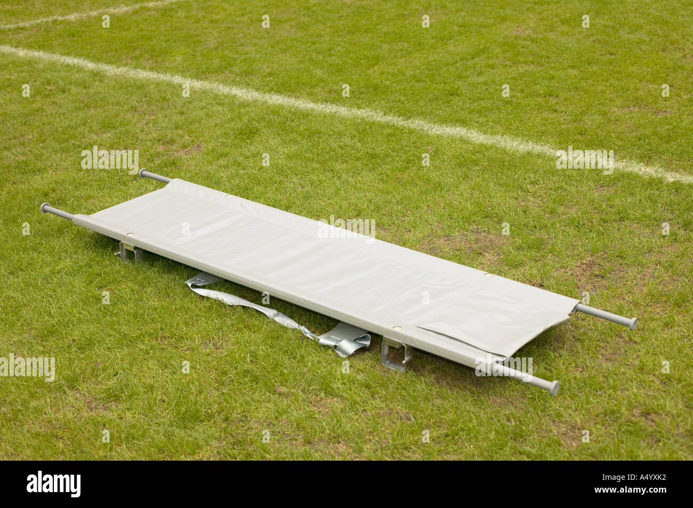
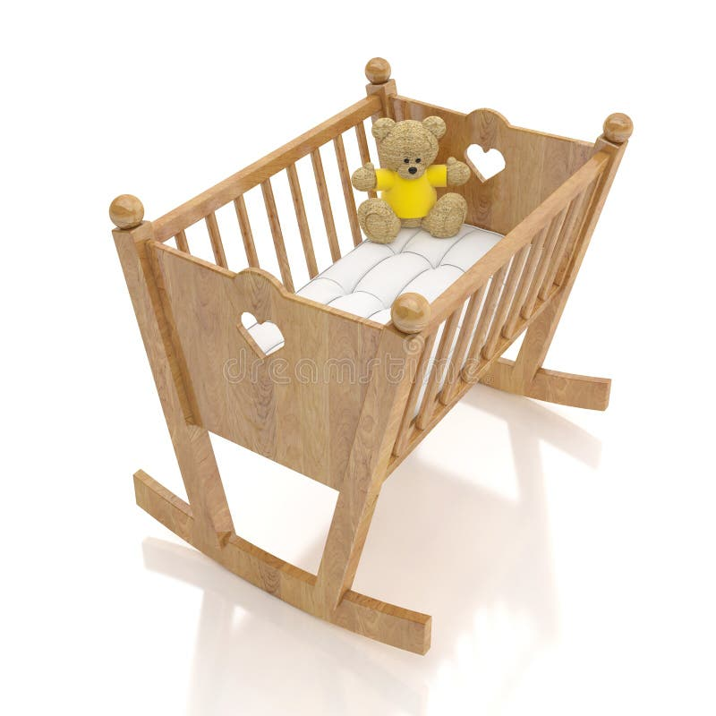
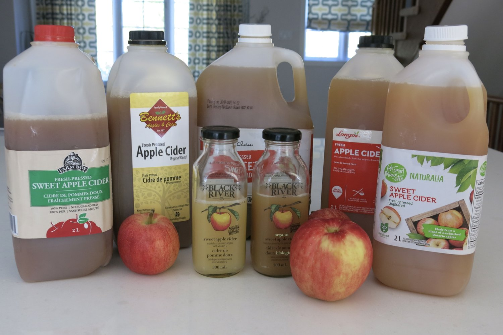

My Vocabulary Page
rubble n(u) //

the piles of broken stone and bricks that are left
when a building falls down or is destroyed
1/ "I see a lot of rubble in Gaza."
2/ There were piles of rubble everywhere.
the rubble of something
3/ "I see Bisan saying hello from the rubble of Gaza."
4/ "Some 7,000 people are still missing under the rubble of the Gaza Strip."
5/ "Dozens of bodies have reportedly been found in the rubble of Gaza City
in the midst of Israel's latest offensive there."
reduce something to rubble
6/ The bomb reduced the houses to rubble.
7/ "My school is reduced to rubble."
8/ "After 120 years, Arnold School is reduced to rubble."
9/ "One of the best schools in Gaza was reduced to rubble,
and much of the Al Quds hospital in Gaza City was burned out."
bury somebody/something in rubble
10/ "Thousands of bodies lie buried in rubble in Gaza."
11/ "Dozens of people are believed to be buried in rubble after
an Israeli attack on a school in Gaza."
12/ "Cars are buried in rubble in the aftermath of the September 11 attacks."
live in rubble
13/ "Life goes on even if we live in rubble."
14/ "One year later, Gaza’s people still live in rubble,
and the world has broken its promises about rebuilding the enclave."
ruin v(t) //
spoil or destroy something completely
ruin something
1.1/ The bad weather ruined our trip.
1.2/ She has ruined everything.
1.3/ It would be a shame to ruin such a beautiful place.
1.4/ Huge modern hotels have ruined this once unspoilt coastline.
be/get ruined (by something)
1.5/ The crops were ruined by the late frost.
1.6/ My new shoes got ruined in the mud.
1.7/ "Which movies got ruined by the characters?"
ruin somebody's chance
1.8/ "You ruined my chance of romance today."
1.9/ Her injury ruined her chances of winning the race.
1.10/ "Have i ruined my chance of a relationship with this girl?"
ruin your health
1.11/ "Stress has ruined my health."
1.12/ Years of drinking had ruined his health.
ruin your life
1.13/ "I won't let drugs ruin my life."
1.14/ "Sixteen years ago I would have told you that the car accident ruined my life."
1.15/ "My marriage ruined my life but Kriti didi has given me a new life."
1.16/ In one striking passage, she wrote: "Parents, both of you, thank you
for teaching me that taking drugs ruins lives, breaks families apart
and gives no one a quality of life worth living."
ruin a dream
1.17/ "The pandemic ruins my dream of working abroad."
1.18/ "My disability ruined my dream of replacing Messi."
ruin a plan
1.19/ "Nothing ruins your plan for a day at the beach like realizing
you forgot your beach bag!"
1.20/ "Now that we know she's a girl, it kind of ruins my plan for Wally Wolowitz."
ruin a surprise
1.21/ "You ruin the surprise every year."
1.22/ "Did you ruin one? Or did someone ruin a surprise for you?"
1.23/ "I will let you discover the differences on your own
since I don't want to ruin the surprise."
see also: spoil, damage, destroy
v(t) make somebody/something lose all their money, their position, etc.
ruin somebody
2.1/ If there's a scandal I'll be ruined!
2.2/ "Your love ruins me and hurts me."
2.3/ The long legal battle ruined him financially.
ruin something
2.4/ The country was ruined by the war.
2.5/ Cheap imported goods are ruining many businesses.
2.6/ They accused the government of ruining the economy.
ruin somebody's reputation
2.7/ "Social media websites can ruin reputation."
2.8/ "You ruined your reputation, and now people despise you or avoid you."
2.9/ "I can ruin my own reputation in five minutes. I don't need help."
2.10/ "How do I forgive the people who ruined my reputation in my hometown?"
ruin somebody's life
2.11/ "Does prison ruin your life?"
2.12/ That guy isn't going to ruin my life.
2.13/ "Prison sentences really ruins people's lives."
ruin somebody's future
2.14/ "I let my past ruin my future."
2.15/ "As orphans, we should not let the past ruin our future."
ruin n(u) //
the state or process of being destroyed or severely damaged
3.1/ The house had been left to go to ruin.
3.2/ The terrorist attack had left the city in a state of ruin
fall into ruin
3.3/ They let the palace fall into ruin.
3.4/ A large number of churches fell into ruin after the revolution.
3.5/ "Gokuraku-in Temple fell into ruin after the Meiji period."
the ruin of something
3.6/ The car accident meant the ruin of all her hopes.
3.7/ "I abandoned you for I feared the ruin of my dream and the victory of
a nightmare, the reveal of a trick and the defeat of my fantasy."
3.8/ "I was finishing up my first decade as an adjunct instructor
of English, and I was facing the ruin of my career."
n(c) the broken parts that are left of an ancient building or town
4.1/ We visited a Roman ruin.
4.2/ The old mill is now little more than a ruin.
4.3/ We visited the ruins of a Norman castle.
4.4/ We visited the ruins of the ancient city of Carthage.
4.5/ He was determined to build a new life out of the ruins of his career.
4.6/ It is perhaps the best preserved monastic ruin in the country.
n(plural) ruins: the broken parts that are left of a building or town
that has been destroyed by bombs, fire, etc.
5.1/ Nine bodies lie among the smoking ruins.
the ruins of a building
5.2/ Two bodies were found among the charred ruins of the house.
5.3/ "Ten years on, the ruins of the school building still tell
the unimaginable tragedy of the calamity."
lie in ruins
5.4/ The church now lies in ruins.
5.5/ The town lay in ruins after years of bombing.
5.6/ "Haiti's kids turn to street as schools lay in ruins."
5.7/ "She could not ignore the fact that nearly 90% of all schools
in Gaza lay in ruins."
5.8/ "The city of Hiroshima lay in ruins after the US atomic
bombing on August 6, 1945 - 66 years ago today."
5.9/ "Hiroshima lay in ruins after the atomic bomb was
dropped on the city on 1945-08-06."
in ruins: destroyed or severely damaged
5.10/ The economy was in ruins after the war.
5.11/ Years of fighting have left the area in ruins.
5.12/ The scandal left his reputation in ruins.
5.13/ Their plans for a comeback now lie in ruins.
n(u) the loss of all your money, your business, or your reputation
lead to somebody's ruin
6.1/ The divorce ultimately led to his ruin.
6.2/ Being entangled in his world could lead to my ruin.
be somebody's ruin (= be the cause of somebody's ruin)
6.3/ Gambling was his ruin.
6.4/ Alcohol was my ruin.
6.5/ Drinking has been the ruin of her.
6.6/ "Love was the cause of my ruin."
6.7/ He said that the plan would be the ruin of European agriculture.
on the brink/verge/edge of ruin
6.8/ The war brought the country to the brink of ruin.
6.9/ Many companies are on the brink of ruin.
6.10/ "I hear his business is on the verge of ruin."
financial ruin
6.11/ The bank stepped in to save the company from financial ruin.
6.12/ Many workers are one health catastrophe away from financial ruin.
displace v(t) //
force someone to leave their home
be displaced
1.1/ "Over 1.4 million Palestinians are displaced."
1.2/ "Thousands of families in Gaza were displaced."
1.3/ "In 1967, some 300,000 Palestinians were displaced following Israel's
occupation of the Palestinian Territories."
1.4/ "Some 900 people are displaced after flash flood destroys houses."
be displaced by something
1.5/ Around 10 000 people have been displaced by the fighting.
1.6/ "Two million refugees were displaced by the Great Famine
in Ireland in the 1840s."
1.7/ "The vast majority of refugees were displaced by ongoing violent
conflicts that make timely repatriation impossible."
1.8/ "Many species are displaced by flood water as they move towards
the river mouths in search of saltier water."
1.9/ "When animals are displaced by deforestation and global warming,
that often puts them and the diseases they carry in proximity to humans."
1.10/ "More than one million people in the Gulf region were
displaced by the storm."
displace somebody
1.11/ "If the dam is built it will displace 100 000 people.
1.12/ "The building of a new dam will displace thousands of people
who live in this area."
1.13/ "Israeli air strikes have displaced Palestinians in Gaza
numerous times and bombardment of areas deemed as safe has left
civilians with limited options for refuge."
1.14/ "Drug traffickers in Honduras displace indigenous people
and destroy forests."
displaced persons, displaced people
1.15/ "Israel kills dozens of displaced Palestinians in Gaza amid more evacuations."
1.16/ "From 1945 to 1952, more than 250,000 Jewish displaced persons (DPs)
lived in camps and urban centers in Germany, Austria, and Italy."
1.17/ "After WWII, many Holocaust survivors, unable to return to their
homes, lived in displaced persons camps in Germany, Austria, and Italy."
displaced people from somewhere
1.18/ "Displaced people from climate frontlines raise their voices at COP27."
1.19/ "We miraculously survived an Israeli bombing targeting convoys of
displaced people from Gaza City towards the center of the strip."
internally displaced people
1.20/ "An internally displaced person (IDP) is someone who is forced
to leave their home but who remains within their country's borders."
1.21/ "Nearly 47 million new internal displacements, or movements,
were registered in the same year, highlighting the urgency to protect
internally displaced people and prevent future displacements."
v(t) move something from its usual position
2.1/ The high ridge displaces ocean water.
2.2/ The blow displaced the woman's eardrum and left her partially deaf.
2.3/ Head stones had been knocked over and soil displaced.
2.4/ "In our design, the bridge is displaced by only one-third of the air gap."
2.5/ "Everything is displaced, shifted, switched and uprooted."
be displaced (by something)
2.6/ The water displaced by the landslides created a tidal wave.
2.7/ Check for roof tiles that have been displaced by the wind.
2.8/ "Tens of thousands of trees were displaced by the storm,
and some buildings were damaged or destroyed"
v(t) take the place of somebody/something
3.1/ Immigrants displace US workers in the job market.
3.2/ "Invasive alien plants also outcompete and displace indigenous species."
be displaced by somebody/something
3.3/ Gradually factory workers have been displaced by machines.
3.4/ "A drunk driver in China rushes a bus full of passengers to
the reservoir because his house is displaced by construction."
3.5/ Coal has been displaced by natural gas as a major source of energy.
3.6/ "We do not find any signs of native workers being displaced by immigrants."
see also: replace, substitute, outcompete
drive out v //
drive somebody/something out (of something):
force somebody/something to leave or stop doing something
drive somebody out (of somewhere)
1/ "Palestinians are driven out of their private farmlands."
2/ "Palestinians are driven out of their homes by occupational forces."
3/ "The Palestinians were driven out of their homeland and their properties,
homes were taken away from them, and they were banished and displaced
all over the world to face all kinds of suffering and woes."
4/ "Harvard aims to drive out older workers and replace them with
young workers, paying them one-half or one-third of a senior worker's salary."
5/ "The university settled with two women who claimed their department
attempted to drive out older workers."
6/ "Driven out of their habitats, many wildlife species are flourishing
in America's urbanized areas, thriving on our handouts and causing nuisances."
7/ "Boars have been driven out of their habitats because trees
have been cut down and they cannot find food there."
drive somebody/something out (of something)
8/ New fashions drive out old ones.
9/ "We will drive out floppy disks altogether."
10/ Critics say the company is trying to drive out competition
and charge high royalties.
11/ The supermarkets are driving small shopkeepers out of business.
12/ "With the relentless march of the supermarkets, a lot of small
retailers may be driven out of business.
parachute n(c) //

(a parachute)
1.1/ "Two parachutes landed on the grass field."
1.2/ "There was a large tear in his parachute."
a parachute carries something
1.3/ "My parachute carries me down."
1.4/ "Parachutes carry airdrop supplies down from a USAF aircraft."
1.5/ "Parachutes carry humanitarian aid packages to the ground."
1.6/ "Parachutes carried them safely to the ground, where they were
then sent to the hospital out of precaution."
1.7/ Parachutes carrying aid packages are dropped into the Gaza Strip."
be carried (down) by parachute
1.8/ "The match ball was carried down by parachute."
1.9/ "What is the heaviest object ever carried by parachute?"
drop something (down) by parachute
1.10/ Planes dropped supplies by parachute.
1.11/ "Planes dropped soldiers by parachute."
1.12/ Airborne troops were dropped by parachute behind enemy lines.
1.13/ "We should be dropping 100,000 individual aid packages by parachute today."
1.14/ "As there is no airport in the city, the aid packages would
be dropped down by parachute.
open a parachute
1.15/ "What do you pull to open a parachute?"
1.16/ "I cannot open my parachute when jumping off a building."
1.17/ "I fail to open my parachute for sky diving."
a parachute fails to open
1.18/ "The parachute failed to open during the jump."
1.19/ "The parachute failed to open and crashed."
1.20/ For whatever reason his parachute failed to open.
1.21/ "The parachute failed to open and both plummeted 13,000 feet
to their deaths."
a package plummets/plunges
1.22/ "One parachute failed to open, while multiple packages that
were not attached to parachutes plummeted to the ground."
1.23/ "Aid packages plummet to the ground after parachutes fail to deploy."
a faulty parachute
1.24/ "What is the chance of receiving a faulty parachute?
1.25/ "He made her jump out of a Plane With a Faulty Parachute
do a parachute jump
1.26/ "He did a parachute jump at 10,000 feet."
1.27/ She's agreed to do a parachute jump for charity.
1.28/ "A paratrooper is a soldier who is is qualified to do parachute jumps."
a parachute harness
1.29/ "A child can skydive as long as he can wear a parachute harness."
1.30/ "During the training, the aircrew were required to wear a parachute
harness and a 38-P life preserver unit to simulate real world scenarios."
see also: a paraglider, v(t) airdrop, n(c) an airdrop, an airlift
parachute v(i) //
jump from an aircraft using a parachute
2.1/ The pilot was able to parachute to safety.
2.2/ "He parachuted to the ground and sustained only minor injuries."
parachute into somewhere
2.3/ The plan is to parachute into the town.
2.4/ "Keith Self will parachute into France on Friday to
commemorate the 80th anniversary of the D-Day invasion."
go parachuting
2.5/ She regularly goes parachuting.
2.6/ "Why do people enjoy parachuting or skydiving?"
2.7/ "Before we went parachuting, the company made us waive
our rights to sue them if one of us got hurt."
adj(before noun) parachuting
2.8/ "The Queen's parachuting entrance was met with universal acclaim."
2.9/ "During D-day and the battle for Normandy, British airborne
forces used parachuting dogs."
2.10/ "In the 1950s, the World Health Organization (WHO) financed and
supported the first ever team of over 14,000 parachuting cats into Borneo."
see also: fall down from somewhere, float down from somewhere
v(t) drop somebody/something from an aircraft by parachute
3.1/ "Cats were parachuted from planes to combat the rat problem."
3.2/ Thousands of leaflets were parachuted behind enemy lines.
3.3/ "Teddy bears were parachuted from the top of a church tower
to help raise cash."
be parachuted into somewhere
3.4/ Supplies were parachuted into the region.
3.5/ "Supplies were parachuted into the mountains."
3.6/ "Air drops of aid supplies parachuted into the Gaza Strip
as Israel-Hamas war continues."
3.7/ "Humanitarian aid was parachuted into Gaza amid the ongoing
conflict between Israel and the Palestinian Islamist group Hamas."
3.8/ "On Sunday, aid packages were parachuted into northern Gaza
from Jordanian, American, French, Belgian and Egyptian planes."
3.9/ "Alfred and Henry Newton were brothers who were parachuted
into France in 1942 to advise on sabotage operations."
3.10/ "The men who were parachuted into Normandy were landed
at Gold, Juno, Sword, Omaha or Utah beaches on June 6,
headed into danger and uncertainty."
3.11/ "These women were parachuted into France during WW2
and transmitted valuable information from enemy territory
whilst working for the SOE."
be parachuted on/onto somewhere
3.12/ "Most space capsule were parachuted on water after reentry."
3.13/ "Players are parachuted onto a virtual island for
last-person-standing fights with realistic-looking weapons."
3.14/ "In the game, 100 players are parachuted onto a deserted
island where they must scramble for resources and fight to the death."
3.15/ "French army soldiers of Special Forces were parachuted
on the city of Tessalit to take control of the airport."
see also: drop something down
cleanse v(t) //
make something completely clean
cleanse skin, cleanse a wound
1.1/ "You can also use a lotion to cleanse your face."
1.2/ "The cream cleanses and nourishes the skin."
1.3/ Cleanse the wound thoroughly before you bandage it.
1.4/ The wound was then cleansed and dressed.
1.5/ Thoroughly cleanse the wound and the area around it.
cleanse something/somewhere
1.6/ "Cleanse the equipment of all dirt, corrosives, and contaminants."
1.7/ "I cleansed the room with white sage to remove negative energy."
be cleansed with something
1.8/ "Your skin is cleansed with a cleanser that is
customized to your skin type.
1.9/ "Cleanse skin with a gentle yet effective cleanser morning and night."
1.10/ "The tip around the urethral orifice is cleansed with the cream."
1.11/ "Cleanse the wound with soap and the cleanest water available."
1.12/ "The equipment is cleansed with sanitary wiping products and
disinfectants, and all garments are disposed of after each use."
see also: clean, sterilize, sanitize, pasteurize
v(t) make somebody/something morally clean or pure
2.1/ "God, you cleanse the evil thoughts of my heart and soul."
2.2/ "Is Israel attempting to enthically cleanse palestinians from Gaza?"
be cleansed of sins
2.3/ She felt cleansed of her sins after confession.
2.4/ Roman Catholics go to confession to be cleansed of their sins.
2.5/ "It is a washing by which we are cleansed of sins, a gift of
grace by which the punishments due our sins are remitted, an illumination
by which we behold that holy light of salvation."
cleanse somebody/something of something
2.6/ "The mayor has promised to cleanse the city of drug dealers."
2.7/ "The Israeli government would have been quite satisfied with
ethnically cleansing Israel of the Palestinians."
2.8/ "Under the might of authoritarian repression, the city has
been cleansed of dissent and opposition."
see also: get rid of something, eradicate, eliminate, massacre
victim n(c) //
a person who has been attacked, injured or killed
as the result of a crime, a disease, an accident, etc.
1.1/ "Helpless victims were pumped with drugs."
1.2/ "The helpless victims were tied up with tape and dumped
in the back of cars which were driven away."
families of (the) victims
1.3/ "The families of the victims said the verdict is a step
forward to making change, but it is not over."
1.4/ "Families of victims urged the president to resist Saudi pressure."
1.5/ "Families of victims urged the Islamic Emirate to
provide nationwide stability in the country."
a murder victim
1.6/ "Over half of all murder victims were aged 30 or younger."
1.7/ The murderer had lured his victim to a deserted house.
a flood victim, an earthquake victim
1.8/ "For Syria's earthquake victims, the suffering continues."
1.9/ "The flood victims were looking on with wide open eyes
for some help to meet their needs."
an accident victim
1.10/ "Over two million injured car accident victims were seen
at emergency rooms in 2020 alone."
1.11/ "They were arrested on charges of endangering traffic
and abandoning an accident victim."
a cancer victim, an AIDS victim
1.12/ The new drug might help save the lives of cancer victims.
1.13/ "Catherine expresses her feelings of being an AIDS victim
to one of her best friends Marilyn through a letter."
(the) victims of something
1.14/ The children are the innocent victims of the fighting.
1.15/ Schools are the latest victims of cuts in public spending.
1.16/ We appear to have been the victims of a cruel practical joke.
1.17/ Several countries have pledged millions of dollars
to help the victims of the tsunami.
1.18/ The site offers help and advice for anyone who has
been the victim of a scam.
1.19/ The team will try to identify potential victims of domestic violence.
be/become a victim of its own success
1.20/ The small company became a victim of its own success when
it could not supply all its orders on time.
1.21/ The school has become a victim of its own success, as parents
with children who have special needs now actively seek it out.
send your condolences to victims
1.22/ "I send my condolences to the victims of this incident."
1.23/ "Send my condolences to victims and their families of
the Osaka earthquake today."
1.24/ "May I use this medium to send my condolences to victims
of the Abuja-Kaduna train terrorist attack in Nigeria."
blame the victim
1.25/ "When we blame the victim, we can avoid feeling guilt."
1.26/ "Indian government officials and political leaders blamed
the victim for various things, mostly based on conjecture."
1.27/ "Some people blame the rape victims for what they
were wearing or their actions."
play the victim (card)
1.28/ "She played the victim and accused us of bullying."
1.29/ "Israel plays the victim and has to face its criminal record."
1.30/ "Youssef went on to comment how Israel played the victim card
and tried to control the narrative."
see also: a sufferer, a hostage
(idiom) fall victim to something
2.1/ Many plants have fallen victim to the sudden frost.
2.2/ Sea turtles in this region often fall victim to the effects of pollution.
2.3/ "They fell victim to airstrikes, errant rocket strikes,
explosions, and collapsing buildings."
2.4/ "This year, tragedy struck as most of his relatives
fell victim to Israel's bombing."
2.5/ "An entire Palestinian family living in northern Gaza fell victim
to Israel's indiscriminate bombing campaign targeting the blockaded strip."
2.6/ " On Friday, a teenage Palestinian boy died due to malnutrition.
He fell victim to Israel's starvation policy in the Gaza Strip."
2.7/ A total of 28 Hongkongers fell victim to human trafficking to
South East Asian countries and sought help from the SAR government."
fall victim to terrorists
2.8/ "A woman who was born in Czechoslovakia and imprisoned
in Terezín also fell victim to terrorists."
2.9/ "Less people fell victim to terrorists in countries like
Syria, Iraq, Yemen, Somalia and Nigeria."
2.10/ "I had to go through the same pain as my daughter after
she fell victim to kidnappers a year earlier."
distribute v(t) //
give things to a large number of people;
share something between a number of people
distribute something
1.1/ The newspaper is distributed free.
1.2/ "We design and distribute pamphlets."
1.3/ The leaflets have been widely distributed.
distribute something to somebody/something
1.4/ The books will be distributed free to local schools.
1.5/ Copies of the book were distributed free to each school in the district.
1.6/ Several people were arrested for distributing racist
leaflets to the spectators.
1.7/ The organization distributed food to the earthquake victims.
1.8/ "Staff then distribute fliers to pedestrians and drivers with
safety tips about the most common causes of crashes in those corridors."
1.9/ "Israel refuses to allow flour to be distributed to Gazan people."
1.10/ "The Peace Winds team distributed aid packages to
those who live in Nisporeni and Criuleni."
1.11/ "On the 8th of Dhu al-Hijjah this year, the Anwar al-Jawadayn Institute
in Baghdad distributed aid packages to orphaned and needy families
in the city as part of its charitable activities."
1.12/ "Help activists have distributed aid packages of food,
hygiene and school supplies to Roma and Egyptians (RE)."
be distributed via/through something
1.13/ Viruses are often distributed via email.
1.14/ "We breed and pack fish food and distribute our
products via wholesalers across Europe."
1.15/ "We distribute our products through reseller partners who
provide invaluable insights and experience thus helping us gain
a better understanding of local markets around the globe."
distribute something among somebody/something
1.16/ The money was distributed among schools in the area.
1.17/ We distributed the money equally among the team members.
1.18/ "8,913 masks and 150 hand sanitizers were distributed
among refugees in June."
distribute something between somebody/something
1.19/ The proceeds will be distributed between local charities.
1.20/ "We gathered data using a uniform questionnaire distributed
between students and teachers."
see also: disseminate, dispense, give something away to somebody
v(t) send goods to shops and businesses so that they can be sold
distribute products
2.1/ Who distributes our products in the UK?
2.2/ Plastika distributes our products in the UK.
2.3/ Their trademark jeans enjoyed immediate success and
were soon distributed worldwide.
2.4/ Hood distributes dairy products throughout the United States.
distribute products to somebody
2.5/ "Croatian wines are distributed to local stores and restaurants in US."
2.6/ "We distribute our products to retailers nationwide in Malaysia,
and selectively to Singapore and Korea."
2.7/ "The loaves of rye bread distributed to local stores by
a certain bakery have an average length of 30 centimeters
and a standard deviation of 2 centimeters."
v(t) spread something, or different parts of something, over an area
3.1/ The plant is globally distributed.
3.2/ "Body fat is distributed predominantly in the abdomen,
buttocks, chest and face."
3.3/ "While the body fat is distributed mainly around hip and extremities
in women, it is distributed around abdomen and trunk in men."
be evenly distributed
3.4/ Make sure your weight is evenly distributed.
3.5/ Wealth is not evenly distributed between age groups.
3.6/ "The weight of the load must be evenly distributed across the forklift."
be skewly distributed
3.7/ "Wealth is relatively skewly distributed and a large literature
tries to measure the concen- tration of wealth."
be distributed on something
3.8/ "The load is evenly distributed on the pallet."
3.9/ This weight is evenly distributed on four wheels.
be distributed over something
3.10/ "The loading in the lift will normally be evenly distributed
over the floor of the car."
3.11/ "The player's 200 pounds are evenly distributed over his six-foot frame."
3.12/ "The humps are reservoirs of fatty tissue: concentrating body fat
in their humps minimizes the insulating effect fat would have if distributed
over the rest of their bodies, helping camels survive in hot climates."
be distributed through/throughout somewhere
3.13/ Cases of the disease are widely distributed through Europe.
3.14/ There are over 35, 000 species of orchid distributed throughout the world.
3.15/ "By implementing a combination of bearings, gears, and counterweights,
the load is evenly distributed throughout the structure, minimizing vibrations,
reducing wear, and ensuring safe rotational movement."
misfortune n(c,u) //
bad luck, or an unlucky event
1/ He has known great misfortune in his life.
2/ He suffered a good deal of misfortune over the years.
the misfortune of something/doing something
3/ "You face the misfortune of suddenly becoming unemployed."
4/ "You have a bustling social calendar, and we're here to ensure
none of your events face the misfortune of your absence."
5/ "The plain truth is that the misfortune of Gaza is simply heart-breaking."
have the misfortune to do something
6/ We had the misfortune to run into a violent storm.
7/ That was the worst film I've ever had the misfortune to see.
8/ "They have the misfortune to be involved."
9/ The French soldiers had the misfortune to be caught in the crossfire.
10/ Last year, he had the misfortune to be involved in a car crash.
have the misfortune of doing something
11/ He was the most arrogant man I'd ever had the misfortune of meeting.
suffer misfortune
12/ "Bill Elliott, last year's winner, also suffered misfortune."
13/ She suffered a good deal of misfortune over the years.
14/ "You are not the only person to have suffered misfortune in your life."
be dogged by misfortune
15/ The project seemed dogged by misfortune.
16/ "The young entrepreneur was dogged by misfortune, but eventually
managed to launch a successful business."
bring misfortune to somebody/something
17/ "I got broke and my business collapsed after marrying her.
She brought misfortune to me."
18/ "The grasshopper plague that was swirling over Colorado
last week brought misfortune to farmers."
19/ "The Depression brought misfortune to many families, but even
by 1930's standards, the Aldens are particularly crushed."
n(c) a misfortune
20/ She bore her misfortunes bravely.
21/ It's unfair to take advantage of other people's misfortunes.
22/ It seems the banks always profit from farmers' misfortunes.
23/ Everything they owned was lost in the fire, which was a great misfortune.
24/ "Merchants continue to unwittingly endure misfortunes in sales
since they fail to take certain factors into consideration."
25/ "Imagine if this loss was only the beginning of a series of misfortunes?"
a misfortune for somebody/something
26/ At that time, being thin was considered a terrible misfortune for women.
27/ "Poverty, first of all was never a misfortune for me;
it was radiant with sunlight." (Albert Camus)
hinge on/upon something v //
depend on something, or need something in order to be successful
1/ "Palestinian lives hinge on ceasefire agreement."
2/ Everything hinges on the outcome of these talks.
3/ The film's plot hinges on a case of mistaken identity.
4/ The case hinges on the evidence of a single eyewitness.
5/ The prosecution's case hinged on the evidence of a witness
who died before the trial.
6/ "Our success hinges on our ability to make the right decision."
7/ "The success of the project hinges on securing sufficient funding."
8/ "World peace hinges on solving long pending issues."
9/ "Peace in the Middle East hinges on resolving the ongoing crisis in Gaza,
where reconstruction efforts are faltering and the blockade continues."
10/ "Peace in the Middle East hinges on Israel halting its military
operations in Gaza, and the two-state solution is the only feasible
way to solve the Palestine-Israel conflict"
hinge on wh-clause
11/ "Your case hinges on what happened next."
12/ His success hinges on how well he does at the interview.
13/ "The United States holds all the cards, and world economic
recovery hinges on how America plays them."
14/ "In many cases, the result hinges on what authorization
and access means in the new paradigm of work."
see also: rely on something, depend on something, be based on something
reply v(i) //
say or write something as an answer to somebody/something
1.1/ He was quick to reply.
1.2/ She didn't even bother to reply.
1.3/ "Where are you going?" I asked. "Home," he replied.
1.4/ "I won't let you down," he replied confidently.
1.5/ "There is no obligation to reply on a day off."
reply to something
1.6/ I try to reply to letters the day I receive them.
1.7/ He hasn't replied to any of my text messages.
1.8/ She usually replies immediately to comments on her posts.
1.9/ "How will you reply to a love letter when you recieve it?"
1.10/ "I replied to your request on May 1, 2022 via email."
reply to somebody
1.11/ "How quickly should I reply to my pen pal?"
1.12/ "We were unable to reply to you on time."
1.13/ "Should I reply to my boss after hours?"
1.14/ "Do I have to reply to my boss at 10pm?"
1.15/ "The local supplier always replied to me slowly."
1.16/ "I have replied to you by now regarding this."
1.17/ "They replied to me slowly, and each time they came up
with a little bit of a new rule."
1.18/ "Once we confirm the information needed, we reply to our customers."
1.19/ "It's reasonable to reply to students within three working days."
1.20/ "If Lydia didn't reply to her in two days, she would go to find her."
1.21/ "She replied to journalists and posted links to their stories."
1.22/ "He chose to reply to reporters in quite an ambiguous manner
that is open to varying interpretations."
reply to somebody by email/phone/letter/fax
1.23/ "The IRS will reply to you by fax within a week."
1.24/ "They can reply to you by letter and mail it to you."
1.25/ "We will reply to you by mail within one business day."
1.26/ "You can request they reply to you by phone instead of email."
1.27/ "We will deal with your problem at the fastest speed
and reply to you by email."
1.28/ "The officer will reply to you by letter, e-mail, or a phone call."
reply to somebody with something
1.29/ He replied to her question with a scowl.
1.30/ "We will reply to you with a yes or no."
1.31/ "She replies to me with more lovely comments."
1.32/ "He replied to journalists with great intelligence."
reply with something
1.33/ She simply replied with a smile.
1.34/ "I replied with a frigid smile."
1.35/ "I replied with anger in my tone."
reply that ...
1.36/ The senator replied that he was not in a position to comment.
1.37/ "The officer replied that they would return the next day."
1.38/ "The officer replied that they would take an immediate
action for assistance."
1.39/ "Israel replied that it entered Rafah to bring down a military
stronghold for Hamas and told the court 'any state would do the same'."
see also: write back, call somebody back, text somebody,
respond to somebody/something
v(i) do something as a reaction to something
that somebody has said or done
reply to something
2.1/ She replied to the threats by going to the police.
2.2/ "Following her departure, the 40-year-old replied to the hostility
directed at her by certain followers when she revealed her political beliefs."
2.3/ "Already on 16.7.1461, Duke Ludwig replied to the war declaration
and the accusations voiced by the Kaiser."
2.4/ "Japan replied to the protest by stating that the ROK's protest
was not acceptable for Japan in light of the Japanese Government's
stance on the Takeshima issue."
reply to something by something/doing something
2.5/ "The World Food Programme (WFP) and UNICEF replied to the crisis
by supplying some food aid to poor people."
reply with something
2.6/ Italy took an early lead but Brazil replied with two goals
in the last five minutes.
2.7/ France took an early lead before Spain replied with
three goals in 14 minutes.
2.8/ "Hezbollah said it fired several rockets at an Israeli
position in Manara village and that Israel replied with gunfire."
reply to something with something
2.9/ "The terrorists replied to the government's statement
with more violence."
2.10/ "Chytilová replied to the crisis with her most bizarre film,
Fruit of Paradise (1970)."
2.11/ "The Sachems later replied to the protest with the defense that
their lease to Howard obliged them to act as they did."
see also: respond to somebody/something, react to something,
react by doing something
reply n(c,u) //
an act of replying to something/somebody in speech, writing or by some action
3.1/ His reply dashed our hopes.
3.2/ We had more than 100 replies.
3.3/ I'm afraid the reply was definitely in the negative.
3.4/ "There are twenty-something replies with twenty-something
different opinions."
somebody's reply
3.5/ "My reply is in the positive."
3.6/ I was a little disconcerted by his reply.
3.7/ He was shocked at the sheer venom of her reply.
get/receive a reply (from somebody)
3.8/ "I have received a reply from everyone now."
3.9/ "I'm glad to receive your reply!"
3.10/ "I got a reply from the governor this morning."
3.11/ "Once you've sent your letter, the anticipation builds
as you wait for a reply from Santa Claus."
3.12/ "He sent a letter to the publisher and soon received an approving reply."
make/give no reply
3.13/ I asked why, but he gave no reply.
3.14/ I asked her what her name was but she made no reply.
3.15/ "The professor made no reply to my new proposal."
without reply
3.16/ Morocco scored four goals without reply to win the game.
3.17/ "There are letters without reply, diaries full of silences,
records lacy with gaps."
a reply to somebody/something
3.18/ "I haven't received a reply to my request."
3.19/ His reply to my question was somewhat ambiguous.
3.20/ I got some interesting replies to my post about online banking.
3.21/ There were very few replies to our advertisement.
in reply to something
3.22/ I am writing in reply to your letter of 16 March.
3.23/ In reply to their questions, she just shrugged.
3.24/ "The US President George Bush planned a military action
in reply to the terrorist attacks which destroyed the Twin Towers
of the World Trade Center in New York and part of the Pentagon
on September 11 2001, causing more than 6,000 deaths."
see also, a response to something, in response to something,
handout n(c) //
a document given to students or reporters that contains
information about a particular subject
1.1/ More information can be found in the handout.
1.2/ "This isn't the first time Trump has asked for handouts."
1.3/ Keep the information in your media handout factual and to the point.
1.4/ I've listed some useful reading material on the handout.
1.5/ The party's press handout was largely ignored by journalists.
1.6/ Her handout included a list of the books she referred to.
1.7/ The publicity handout states that you can book a holiday online in ten minutes.
a handout on something
1.8/ We were given a handout on job hunting.
1.9/ "This document is a handout on trigonometry and analytic geometry."
1.10/ "Students read a handout on the history of the Holocaust."
a(/the) handout of something
1.11/ "The handouts of today's lecture has already been passed out."
1.12/ "Prepare a handout of the lecture's main points."
1.13/ "You may download the handout of the lecture from the resource area."
1.14/ "Please download the handout of the press conference here."
give a handout to somebody
1.15/ "Should I give a handout to anyone who asks?"
deliver/distribute handouts to somebody
1.16/ "Distribute handouts to students and have them do the exercises."
1.17/ "When we deliver handouts to you electronically, you don't
have to pay us for printing or postage."
provide handouts for somebody
1.18/ "You should provide handouts for parents, teachers and students."
1.19/ "Presenters are often conflicted about whether to provide
handouts for audience members."
1/ "Linda wants to provide handouts for people who did not
attend her presentation."
1.20/ "We provide handouts for patients on medications for glomerulonephritis."
get/receive handouts from somebody
1.21/ "Find a partner and come get a handout from the teacher."
1.22/ "Please pick a handout if you or anyone you know may be
interested in participation."
1.23/ "At check-in, students will receive a handout about the expo and a bag
for all the graduate school swag they will receive from representatives."
see also: notes (on/about something), lecture notes
n(c) something such as food, clothing, or money that is
given free to someone who is in need of it
2.1/ I don't want to be dependent on handouts.
2.2/ "Even a smaller amount would be good because a handout from
the government will make people happier."
2.3/ "I'm not interested in government handouts - all I want is a job."
a handout for somebody
2.4/ "The amount the UK spends on handouts for the disabled has ballooned
from £2 billion in 1948 to £37 million now, in today's prices."
2.5/ "The $250 monthly cash handouts for the elderly,
known as fruit money, are inadequate."
get/receive a handout (from somebody)
2.6/ All those eligible will receive a cash handout.
2.7/ "Why work when you can get a handout from the state?"
2.8/ "So please be kind and patient with staff that wants to work and
earn an income and not sit home and get a handout from the government."
give handouts to somebody
2.9/ "The government wants to give handouts to the poor."
2.10/ "Her mother does not give financial handouts to her children."
2.11/ "When political leaders fail to create real jobs in a real
economy, they give handouts to the poor."
distribute handouts to somebody
2.12/ "The UN stopped distributing cash handouts to Gaza's poorest last week."
2.13/ "It is the government's duty to distribute handouts to poor
people at hard time."
see also: a subsidy, financial aid, an allowance, a pension
discount n(c,u) //
an amount of money that is taken off the usual cost of something
give/offer somebody a discount
1.1/ "Can you offer a discount to me?"
1.2/ They usually give you a discount if you buy multiple copies.
1.3/ "The seller is willing to do a collective shipping,
and he would give me a discount of 5%."
1.4/ They only give you a discount if you buy more than a certain amount.
get/receive a discount
1.5/ "Can I get a discount off my trip price?"
1.6/ Students receive a 10 percent discount.
1.7/ "Talk to the shop assistant and try to get a discount on an item."
1.8/ "Customers can receive discounts by using a digital coupon code at checkout."
qualify for a discount, be eligible for a discount
1.9/ Do you qualify for a student discount?
1.10/ Students and pensioners are entitled to a discount.
1.11/ "GESSEL clients are eligible for a discount on the registration fee."
a student discount, a senior discount, a disability discount
1.12/ A lot of venues and galleries offer student discounts.
1.13/ He gets a senior citizen discount at the theater.
1.14/ "The following companies provide a senior discount for travel services."
1.15/ "Smaller performances offer elderly discounts for seniors 65 and older."
1.16/ "Where can I buy a ticket with a disability discount?"
a discount applies to somebody
1.17/ The discount applies only to children under ten.
a discount on something
1.18/ They offer a ten percent discount on travel for students.
1.19/ They're offering a 10% discount on all sofas this month.
1.20/ It was the offer of a large discount on the TV that was the real clincher.
1.21/ There is a 25% discount on all electrical goods until the end of the week.
1.22/ "Get a discount on a purchase over $50. Fill out the form and
we'll be in touch with you shortly."
a discount for somebody
1.23/ There is a special discount for employees.
1.24/ "Do you offer any discounts for families? Yes, we offer a rolling
20% sibling discount for your second child's subscription."
a discount off a price
1.25/ "Store Z is offering a discount off the price of the shoes."
1.26/ "Buy an item and receive a discount off the original price."
1.27/ "Grab one from the link in the comments today to receive a discount
off its original price plus free shipping."
1.28/ "You're asking the owner or host for a discount off a price they did not set."
a discount off an order
1.29/ "Stand a chance to win a great deal or even a discount off your order."
1.30/ "All I can find online today is a code for a discount off the first order."
1.31/ How would you like a 20 per cent discount off your grocery bill?
at a discount
1.32/ "We sell ice cream cones at a 10% discount."
1.33/ People who work in the trade can buy their books at a discount.
1.34/ "During the sale season, commodities are sold at discounts."
1.35/ "Defective or nearly defective electronic products are sold at discounts."
at a discount to something
1.36/ "All these securities are sold at a discount to their par value."
1.37/ "It's a chance to buy new shares at a discount to the current trading price."
a 10 percent discount, a discount of 10 percent
1.38/ Spend over £50 and receive a 15 per cent discount.
1.39/ "Today's 46% discount, however, knocks $110 off its listed price to
mark the lowest price we have tracked for it on Amazon."
1.40/ "A shopkeeper allows a discount of 10% on the printed price of his goods."
1.41/ "During a sale, a shop offered discount of 10% on the
marked prices of all the items."
1.42/ "A shopkeeper sells an item at a discount of 25% off its selling price
and makes a profit of $15.5 If the item costs $600."
be 10% off (a price)
1.43/ "Everything is 10 percent off today!"
1.44/ "Juices, vinegars, preserves and merchandise are all 10 percent off."
1.45/ "When you subscribe, you save 10 percent off your purchase."
1.46/ "A book was on sale for 40 percent off its original price."
discount rate
1.47/ We offer special discount rates for families.
1.48/ "Find the best New York City hotel deals with discount rates
that meet your budget."
a discount voucher/coupon/card
1.49/ "How do I use a discount voucher?"
1.50/ "Benefits include a discount card and bonus scheme."
1.51/ "If you cancel any item(s) in your order with a discount voucher
applied, you will be refunded only the final paid price after
the applied discount - which is apportioned among the items in your order
according to their respective value."
a discount store/retailer, a discount airline
1.52/ "You may be able to find items at a discount store as well."
1.53/ "You will almost always have to pay extra for food and drink
on a discount airline."
discount v(t) //
reduce the usual price for something
2.1/ The airline has discounted domestic fares.
2.2/ Our entire inventory is discounted below retail prices.
2.3/ The newspaper will discount its cover price this week.
be discounted by 10%
2.4/ Most of our stock has been discounted by up to 40 per cent.
2.5/ "If the original price of a shirt is $40 and it is discounted by 20%,
what is the final price?"
2.6/ The initial charges will be 5.25%, discounted by 2% to 3.25%
until 31 January.
a discounted item, a discounted price
2.7/ Students can get discounted tickets.
2.8/ "Are you prepared to snatch up those discounted flight tickets?"
2.9/ "The downside of buying discounted food is the short expiry date."
2.10/ "The dress was sold at a discounted price of $176."
2.11/ "This weekend's special will be our Parma Pizza sold at a discounted price!"
2.12/ Aer Lingus is offering heavily discounted prices on flights
to the US this month.
v(t) think or say that something is not important or not true
discount something
3.1/ We cannot discount the possibility of further strikes.
3.2/ "Their intentions are good, but sometimes people see them as annoying
and their efforts are discounted or even ignored."
3.3/ "Your hard work is discounted, and the rewards you get are
subject to the company's policies."
3.4/ "It can lead people to feel offended and believe that
their hard work is discounted."
3.5/ "Those who discounted American history because it was so brief
forgot that we were a nation a century before we became an empire."
discount something as something
3.6/ "They discounted me as empty-headed."
3.7/ The news reports were being discounted as propaganda.
3.8/ "They simply discounted me as someone too stupid to
tighten the tank properly."
(adj) discounted
3.9/ "Israel's archives are being hurriedly sealed up precisely
to prevent any danger that records might confirm long-sidelined
and discounted Palestinian history."
3.10/ "You probably signed up for one of the discounted history classes."
see also: dismiss, ignore, deny
embody v(t) //
express or represent an idea or a quality
embody something
1.1/ "Her paintings embody her love of nature."
1.2/ She embodied good sportsmanship on the playing field.
1.3/ Arthur Ashe embodied the ideals of good sportsmanship.
1.4/ The new constitution embodied the right to free speech.
1.5/ We want to build a national team that embodies competitive spirit and skill.
1.6/ "She embodies elegance and grace, a true epitome of cultural splendor."
1.7/ "Clothed with strength and dignity, she embodies beauty and wisdom."
1.8/ "His work embodied the indomitable spirit of the Belarusian people."
1.9/ "His painting embodies a certain nostalgia and longing for an imagined past."
1.10/ "The new law embodies the notion of putting people first, as it
fully considers workers' interests."
1.11/ "Beyond its hardware advancements, the iPhone 16 embodies Apple's
commitment to delivering a seamless and intuitive user experience."
1.12/ "Leonardo da Vinci embodied Renaissance ideals through his
multidisciplinary pursuits, innovative thinking, and humanistic
approach to art and science."
be embodied in something
1.13/ These ideals were embodied in the constitution.
1.14/ "Private property rights are embodied in the US constitution."
1.15/ "His legacy endures through the modernizing legal and
administrative reforms he enacted in France and Western Europe,
embodied in the Napoleonic Code."
embody a(/the) vision of something/somebody
1.16/ "Aditi and Pranav embodied a vision of musical symphony."
1.17/ "I embodied the vision of the designer or the brand."
1.18/ "Leader Abrams embodied a vision for a multi-racial democracy
where every voice is heard."
1.19/ "Your willingness to embody the vision of your organization has
a direct impact on your credibility as a leader."
1.20/ "The iPhone 16 embodies this vision, its performance tailored to
meet the demands of those who dare to lead."
see also: represent, encapsulate, the epitome of something, feature
v(t) include or contain something
embody something
2.1/ This model embodies many new features.
2.2/ "The new car model embodies the latest technology."
2.3/ "The 2024 model embodies the latest technology and trends in the world
of clothing for boys, giving you a modern and elegant look."
2.4/ "A smartphone embodies the technology of communication, allowing users
to make calls, send messages, and access the internet."
embody a group of people
2.5/ "Political parties consist of organizations that embody groups
of people who share similar interests."
2.6/ "I feel that Kamala Harris and Tim Walz embody a group of people
that will help make this country better."
embody something in one man/person
2.7/ Kennett embodied in one man an unusual range of science, music and religion.
2.8/ "Leonardo da Vinci embodied in one man an unusual range of
science, music, arts and religion."
2.9/ "She embodies human lostness and alienation in her person
and situation due to sin."
2.10/ "Frances Browne embodies all of these elements in one person and
is therefore an incredibly important touchstone in the quest for
a pluralist and multi-cultural Ireland."
see also: include, contain, encompass, incorporate,
handy adj //
[useful] easy to use or to do
1.1/ It's quite a handy little tool.
find something handy, find it handy to do something
1.2/ We found it handy to have a cellular phone.
1.3/ First-time visitors to France will find this guide particularly handy.
be handy for something/doing something
1.4/ The wire brush is very handy for cleaning up old iron and steel.
1.5/ "The integrated LED light is handy for working at night."
1.6/ "Our blueberry ground coffee is handy for enhancing breakfast time
since it goes so well with crepes, pancakes, and other sweet morning delights!"
a handy tip/hint/tool (for somebody/something)
1.7/ "Here is a handy tip for anyone who makes print and cut stickers!"
1.8/ "We give you a handy tip when it comes to storing your seeds."
1.9/ "The Ryobi Power Scrubber is a handy tool for cleaning jobs."
1.10/ "A back scratcher is a handy tool designed to relieve itching and
provide relief to hard-to-reach areas on the back. "
be handy for somebody
1.11/ The arrangement was handy for both of us.
1.12/ "It is handy for the elderly who can't always get to the shops
easily, and we hope it will be especially useful in the winter
with the bad weather."
1.13/ "These aids are particularly handy for the elderly, or for those
with any kind of disability as they make those everyday activities easier
and so add to the enjoyment of life and increased self-esteem."
1.14/ "Easy to use, no need for separate water pipes, handy for
the disabled and elderly to wash hair in a seated position."
it is handy doing something
1.15/ It's very handy having a light above your desk.
1.16/ "Admittedly it is handy putting the beaters in the dishwasher."
1.17/ "It is handy taking a shortcut into the main street, and it is
only five minutes to the beach."
come in handy
1.18/ The extra money came in very handy.
1.19/ "The money will come in handy when I want to travel."
1.20/ "The money my aunt gave me will come in handy to pay for my music lessons."
1.21/ Don't throw that away - it might come in handy.
1.22/ Take your swimming trunks with you - they might come in handy.
1.23/ Take your penknife - you never know when it might come in handy.
1.24/ Don't throw those bottles away - they'll come in handy
for the picnic next Sunday.
adj(not before noun) located near to somebody/something;
located or stored in a convenient place
keep something handy
2.1/ Always keep a first-aid kit handy.
2.2/ "Always keep the first aid box handy.
2.3/ "Keep your résumé handy for every opportunity that knocks on your doorstep."
get something handy
2.4/ Have you got a pen handy?
2.5/ "It takes a bit of math to find your target heart rate zones,
so get your calculator handy."
be handy for (=near) something
2.6/ Our house is very handy for the station.
2.7/ It's a nice house and it's handy for the train station.
2.8/ "The property is handy for amenities at Belper, Milford and Duffield."
2.9/ "It is handy for the beach and the harbour area."
see also: at hand
adj(after verb) able to use something skilfully
be handy with something
3.1/ Lucy is quite handy with a drill!
3.2/ "Eduardo is handy with power tools."
3.3/ "Donald Trump is handy with his signature."
3.4/ Jonathan's good at putting up wallpaper, but he's not
so handy with a paintbrush.
3.5/ "It is now important to be handy with a calculator."
be handy about/around the house
3.6/ Susannah's very handy about the house.
3.7/ "I am handy about the house as I can cook and clean and
am generally quite an optimistic individual."
see also: a handyman
preference n(c,u) //
the fact that you like something or somebody
more than another thing or person
1.1/ White wine or red - what's your preference?
1.2/ Her preference is for comfortable rather than stylish clothes.
1.3/ My preference is to stay home and get takeout and watch a movie together.
1.4/ She was happy to arrange her schedule to suit their preferences.
1.5/ Tastes and preferences vary from individual to individual.
have a preference (for somebody/something)
1.6/ Do you have a colour preference?
1.7/ Do you have a preference for red or white wine?
1.8/ We have white and brown bread - do you have a preference?
1.9/ "I have a preference for petite girls."
1.10/ "I have a preference for chicken wings."
1.11/ I have a preference for blond men over dark.
1.12/ "Voters have a preference for female candidates."
1.13/ I have a preference for sweet food over spicy.
1.14/ "Most women have an innate preference for men who are taller than them."
1.15/ "The coach doesn't particularly have a preference for tall players."
1.16/ "Ever since the accident however, she's always had more of
a preference for cars than men or women."
1.17/ "Many couples have the cultural preference for boy babies, so they
would not stop inducing abortions until they have boys."
1.18/ "It seems natural that teachers have a preference for top students."
show/express a preference (for somebody/something)
1.19/ Females showed a preference for long-tailed males.
1.20/ Many people expressed a strong preference for the original plan.
1.21/ Parents may be able to express a preference as to the school
their child will attend.
a preference to do something
1.22/ Many elderly people expressed a strong preference to live
in their own homes.
1.23/ "Even before the COVID-19 pandemic, workers stated a preference to
work at home at least some of the time."
a preference for A than/over B
1.24/ "Families are more likely to express a preference for girls than boys."
1.25/ "Researchers have found that a preference for boys over girls leads to
girls receiving less nutrition, particularly in rural China."
1.26/ "Some countries also exhibited a preference for daughters over sons."
1.27/ These investors had a preference for securities rather than bank deposits.
n(u) personal preference
1.28/ Buying a car is a matter of personal preference.
1.29/ Choosing furniture is largely a matter of personal preference.
1.30/ "This setting is only out of my personal preference."
1.31/ "It is my personal preference to invite people home or not."
1.32/ The amount of sugar you add will depend on personal preference.
n(u) (in) order of preference
1.33/ "These six wines are listed in order of preference."
1.34/ Let's make a list of possible speakers, in order of preference.
1.35/ "You have three options mentioned in order of preference."
in preference to somebody/something: rather than somebody/something
1.36/ Use clear English in preference to technical language.
1.37/ She was chosen in preference to her sister.
1.38/ They bought French planes in preference to British ones.
1.39/ He studied chemistry in preference to physics at university.
n(c,u) food preference
1.40/ "Children's food preferences and dietary habits are influenced
mainly by environmental and social factors."
1.41/ "Our students are interested in what they eat and where their
food comes from, not because of food preference but for the impact
that food has on the world."
n(c,u) sexual preference
1.42/ I wouldn't like to guess her sexual preference.
1.43/ The company denied any discrimination on grounds of sexual preference.
see also: prefer
n(c,u) an advantage that is given to a person or a group of people
2.1/ "We are ready to offer preferences to our partners."
2.2/ Special preferences were offered initially to encourage investment.
receive preferences from somebody/something
2.3/ "Hinch is poised to receive preferences from Labor voters."
2.4/ "Candidates can make secret deals to receive preferences from one another."
give (a) preference to somebody/something
2.5/ Preference will be given to graduates of this university.
2.6/ The city gives preference to job applicants who live there.
2.7/ "We give preference to startup founders and scientists."
2.8/ "We give preference to start-ups creating innovative solutions in sectors."
2.9/ We give preference to those who have worked with us for a long time.
2.10/ This small-business program gives preference to minority-
and women-owned companies.
pour v(i,t) //
(pour liquid)
pour something
1.1/ I spilled the juice while I was pouring it.
1.2/ Although I poured it carefully, I still managed to spill some.
1.3/ The crew mixed and poured the concrete.
pour something in/into a container
1.4/ "I pour juice in a glass."
1.5/ "We poured apple cider in wine glasses."
1.6/ "I grab the boiled kettle and pour water in my mug."
1.7/ "Pour decaffeinated coffee into a coffee mug."
1.8/ "Do you want me to pour the milk into your tea?"
1.9/ "The milk overflowed when I poured it into the jug."
1.10/ "One option is to simply pour soy milk into your coffee."
1.11/ Let's see if I can pour the juice into the glass without spilling it.
1.12/ After four minutes, pour the pasta into a colander to drain.
1.13/ "How do you pour soup into a bowl from a pot?"
1.14/ "The chef pours soup into a noodle bowl using a ladle."
1.15/ Pour the honey into the bowl and mix it thoroughly with
the other ingredients.
1.16/ "I pour coffee into my mug and then add some milk, maybe some sugar."
pour something down something
1.17/ She poured boiling water down the sink.
1.18/ "You wouldn't pour tea down the throat of an unconcious person."
1.19/ "Should I pour water down a frozen pipe?"
1.20/ " You pour water down a tube into the reservoir."
1.21/ "Never pour drain cleaner down your drains to remove clogs."
pour something from something
1.22/ "I pour almond milk from the carton."
1.23/ "You gently pour wine from the bottle into the decanter."
1.24/ "Pour water from the jug into one bowl and then into the other."
1.25/ "I pour hot water from the kettle and watch the steam rise."
1.26/ "Slowly pour tea from the teapot into a serving cup."
1.27/ "I watched Tiffany pour coffee from the flask into the coffee cups."
1.28/ "He poured hot coffee from the carafe into the cup on the tray."
pour something out (of something)
1.29/ I was in the kitchen, pouring out drinks.
1.30/ "I pour lemonade out of the tap of the dispenser."
1.31/ "The leaders of this country couldn't pour water out of a boot."
pour something away
1.32/ Pour away as much fat as possible from the roasting pan.
1.33/ "If you have to pour water away, never do it in a dry area."
pour somebody something
1.34/ "The CEO pours me a glass of water."
1.35/ "I've poured you a cup of tea."
1.36/ Would you like me to pour you some more wine?
1.37/ I poured myself some water from the carafe on the table.
1.38/ Jack was pouring himself another glass of whisky.
1.39/ "She pours me coke in a reusable mug before she goes to work."
pour something for somebody
1.40/ I have poured a cup of tea for you.
v(i) pour
1.41/ Shall I pour?
1.42/ Would you like to pour while I open some bags of nuts?
1.43/ "She pours when I say it again. Hardly had she settled in her armchair
at the window overlooking the garden when she hears a knock on the door."
v(i,t) (cause to) flow quickly and in large amounts
pour into something
2.1/ The crowd poured into the streets.
2.2/ "Water pours into the glass slowly and at a constant rate."
2.3/ "Floodwaters pour into train station in Germany."
2.4/ "With a single-level drop of 200 meters, the river pours into
the bottom of Ruyuan Grand Canyon."
2.5/ Refugees have been pouring into neighbouring countries
to escape the civil war.
pour in
2.6/ Letters of complaint continue to pour in.
2.7/ "Floodwaters are pouring in. People in the left dike area of
the Red River in Hung Yen are struggling to escape the flood."
pour down something
2.8/ Tears poured down his cheeks.
2.9/ The sweat was pouring down her face by the end of the race.
2.10/ "As sweat poured down my body I couldn't help but wonder how
people made it through 45 minutes of this heat."
pour from something
2.11/ Blood was pouring from the wound.
2.12/ I felt a sharp pain and looked down to see blood pouring from my leg.
2.13/ "I have to stand over the sink to floss as the saliva pours from my mouth."
pour out of something
2.14/ Thick black smoke was pouring out of the roof.
2.15/ Commuters came pouring out of the station.
pour off somebody/something
2.16/ The sweat was pouring off her.
2.17/ "The sweat pours off my face and chest areas."
see also: flow, flock to somewhere
v(i,t) (rain pours down)
3.1/ It's pouring outside.
3.2/ It's pouring down rain outside.
3.3/ It looks as though it's about to pour.
3.4/ It looks as though it's about to pour with rain.
rain pours (down)
3.5/ The rain pours down all and every day, and the wind
never seems to drop or vary.
3.6/ "Do i have to take cacti inside if the rain pours down
suddenly or just leave it be?"
3.7/ "On Islamabad Road, rain pours heavily, creating a glistening
sheen on the asphalt."
3.8/ "As the rain pours outside and raindrops cover the windows, she sings
the first verse while changing her smart clothes for more casual ones."
show off v //
try to impress others by talking about your abilities, possessions, etc
1.1/ He's just showing off because that girl he likes is here.
1.2/ My parents were in town and I wanted to show off.
1.3/ She only bought that sports car to show off and prove she could afford one.
show off to somebody
1.4/ He's always showing off to his classmates.
1.5/ "Why does my wife regularly show off to my friends?"
1.6/ "I imagine Sarada to be a type of a child who loves to
show off to her parents."
1.7/ "You still showed off to me about drinking red wine with the resort ahjusshi."
(v) show something/somebody off:
show people somebody/something that you are proud of
2.1/ "I will show my kid off all the time."
2.2/ "If you have a talent, show it off to me."
2.3/ We were keen to show off our new car.
2.4/ She brought her baby pictures so she could show them off.
2.5/ "A young woman shows off the tattoo on her hand."
show off + wh-clause
2.6/ He likes to show off how well he speaks French.
2.7/ "Chinese people don't intentionally want to show off how rich they are."
2.8/ "I love when friends come to visit me here, and I can show off where I live."
show something/somebody off to somebody
2.9/ "My mom tries to show me off to my aunts."
2.10/ "My best friend came to show off his new car to me."
2.11/ "My father loved to show me off to relatives and friends
visiting the family."
see also: flex, flex your muscles
(v) [clothing] make somebody look attractive, by showing their best features
3.1/ She wears a dress that shows off her figure.
3.2/ "She wears a dress that shows off nice cleavage."
3.3/ She likes to wear short skirts to show off her legs.
3.4/ "Sharon Stone showed off her physique while wearing
a bikini in a swimming pool."
3.5/ "The idol shows off her legs by wearing high boots at a promotional event."
moment n(c) //
a very short period of time
wait a moment
1.1/ Can you wait a moment?
1.2/ Could you wait a moment, please?
1.3/ One moment, please.
just a moment, just a minute, just a second
1.4/ "Just a moment."
1.5/ Just a minute - I'm almost done.
1.6/ Just a moment; let me put these away first.
get a moment, have a moment
1.7/ Have you got a moment?
1.8/ "Have you got a moment to talk about Linux?"
1.9/ "Do you have a moment?"
1.10/ "Can we have a moment together?"
1.11/ "Mrs. Kirkman, do you have a moment for Kendra Daynes?"
1.12/ "Excuse me sir, do you have a moment to talk about
our Lord and Savior, Jesus Christ?"
take a moment (see also: take your time)
1.13/ This won't take a moment.
1.14/ "Please take a moment to finish the survey."
1.15/ "Please take a moment to complete the questionnaire(s)
of interest to you."
spare a moment
1.16/ Can you spare a few moments to answer some questions?
in (just) a moment (see also: shortly)
1.17/ I'll be back in a moment.
1.18/ I will be ready in just a moment.
1.19/ "I will come back in a moment."
for a moment (see also: for a while)
1.20/ "Let's stay here for a moment."
1.21/ He thought for a moment before replying.
1.22/ Could you mind my bag for a moment while I go to the toilet?
1.23/ For one brief moment I thought, 'I can handle this.'
a few moments later/ago
1.24/ "A few moments ago we heard words about salvation."
1.25/ "Moments later, I heard a terrible crash.
1.26/ A car drew up outside and a few moments later the doorbell rang.
after a moment, a moment later (see also: afterwards)
1.27/ A moment later we heard a splash.
1.28/ "I don’t understand," said Louise after a moment.
not a moment too soon (= almost too late)
1.29/ We arrived not a moment too soon.
1.30/ Help arrived - and not a moment too soon.
n(c) a particular time or occasion
2.1/ It was one of the most exciting moments in his life.
2.2/ She let the news slip by mistake, in an unguarded moment.
the moment when ...
2.3/ I remember the moment when I first saw him after the operation.
2.4/ "At the moment when he had said it he knew what a mistake he had made."
at the moment (= now)
2.5/ We're busy at the moment.
2.6/ Sorry, she's not here at the moment.
2.7/ At the present moment, we do not have a choice.
2.8/ "I can't see you because I am quite busy at the moment."
2.9/ Is Michelle all right? She doesn't seem quite herself at the moment.
at this moment in time (= now)
2.10/ I can give no information at this precise moment in time.
2.11/ At this moment in time, I don't know what my decision will be.
2.12/ At this moment in time it would be inappropriate to
comment on the situation.
at that moment (see also: just then)
2.13/ At that very moment, the phone rang.
2.14/ "Honestly, at that moment, I felt offended, as if I were a dumb child
who couldn't possibly answer elementary school math questions correctly."
(at) any moment
2.15/ He might wake up at any moment.
2.16/ I'm expecting her to come at any moment.
2.17/ Hurry up! He'll be back any moment now.
2.18/ You need to be aware of what you are doing at any given moment.
2.19/ Quinn always seems to be in the right place at the crucial moment.
for the moment (= now but it is subject to change with time)
see also: for now, for the time being
2.20/ "We do not know what dark matter is for the moment."
2.21/ Let's keep doing what we agreed for the moment.
the best moment
2.22/ "Plan your diving trips at the best moment."
2.23/ When would be the best moment to tell the family?
2.24/ "It will go down as one of the best moments in my life."
2.25/ "The best moments in my life were those when I just went
for it without planning."
the perfect moment
2.26/ "This meeting is the perfect moment to look for answers."
2.27/ "Don't wait for the perfect moment to arrive;
make every moment perfect yourself!"
the worst moment
2.28/ "You pick the worst moment to bluff."
2.29/ "Just then, my dad decided to pick the worst moment to finally
give me my birthday gift."
(until) the last moment
2.30/ Don't leave it to the last moment.
2.31/ Don't leave it till the last moment/
2.32/ "I love you until the last moment of my life."
2.33/ "We don't give up our victory until the last moment of the match."
a right moment, a bad moment
2.34/ Have I caught you at a bad moment?
2.35/ I'm waiting for the right moment to tell him the bad news.
2.36/ "If you are waiting for a right moment to take action,
make this moment."
a moment of something
2.37/ "I try to have a moment of joy every day."
2.38/ "There was a moment of laughter in the living room."
2.39/ "In 1976, the state of Virginia allowed schools to have a moment of
silence at the start of the school day."
in a moment of something
2.40/ I agreed in a moment of weakness.
2.41/ "Join me in a moment of silence for Laura and her dear memory."
2.42/ "Let me be clear that the rebuilding of relationships can take time
and isn't quickly resolved in a moment of tears and apologies."
from that moment on, ...
2.43/ From that moment on, she never felt really well again.
2.44/ From that moment on we were the best of friends.
the moment (that) ... (= as soon as)
2.45/ The moment that I get the money I'll send the ticket.
2.46/ "I promise you can have the magazine the moment I finish reading it."
n(c) a moment is also a special time or opportunity
3.1/ I treasure the moments we spent together.
3.2/ That was one of the happiest moments of my life.
3.3/ This referendum is a defining moment for our nation.
a big moment
3.4/ "Your wedding is a big moment with lots of memories being
created, shared and captured."
3.5/ "A wedding is a big moment, where a couple celebrates love
in a grand way before God, family and friends."
somebody's moment
3.6/ "It was my moment to shine!"
3.7/ "His wife Denise was there to share his big moment."
3.8/ You know that when that curtain goes up, it’s going to be your big moment.
3.9/ This was her moment and she knew she had to take it.
choose/pick your moment
3.10/ He picked his moment carefully to tell them the news.
3.11/ I suggest picking your moment before you ask the boss for a raise.
3.12/ Wow, she broke up with him on his birthday? She really knows
how to pick her moment.
3.13/ "I have to carefully pick and choose my moment to interact."
3.14/ If you want a private conversation with her you'll have to
choose your moment.
have a moment
3.15/ The film has many memorable moments.
3.16/ "I had a moment with a guy in the street that left me
wondering for months afterwards."
3.17/ "When you were little, have you ever had a moment with
a girl at a party or something?"
capture a moment
3.18/ "How does art capture a moment in history?"
3.19/ I managed to capture the moment on film.
3.20/ "Want to capture that romantic moment?"
3.21/ "The terrible moment was captured on three newsreel cameras."
3.22/ "The work sometimes takes months to complete before video cameras
capture the moment of detonation."
(idiom) be having a moment (= fashionable)
3.23/ Right now, oversized sweaters are having a moment.
3.24/ "Metallic bikinis are having a moment."
3.25/ "Pyjama pants are having a moment."
cater v(i,t) //
provide food and drinks for a social event
1.1/ Which firm will be catering at the wedding reception?
cater for somebody/something
1.2/ Most of our work now involves catering for weddings.
1.3/ "Contact us to cater for your family gathering or corporate events."
1.4/ "Let High Tide cater for your Family this Thanksgiving!"
1.5/ "Dave and his team catered for our wedding last weekend, and we
couldn't have wished for better."
1.6/ There is plenty of work to be had catering for weddings and parties.
cater for ten (people)
1.7/ "Most recipes cater for four or six."
1.8/ I'm catering for twelve on Sunday - the whole family is coming.
1.9/ "The Cederburg meal caters for four people."
1.10/ "For a couple of nights who would cater for ten people?"
cater something
1.11/ Who catered your party?
1.12/ Who will be catering the wedding?
1.13/ Delegates can have meals catered by the hotel while
the conference is underway.
a catering service, catering services
1.14/ "Experience our catering services now!"
1.15/ "You may discover the best catering service and simple
online ordering procedures here."
1.16/ "There's also a catering service for those who can't be bothered to cook."
1.17/ "We offer catering services for corporates, wedding and any events."
the catering industry
1.18/ "I work in the catering industry."
1.19/ "Workers in the catering industry have to use various kinds
of chemicals and fuel in their work."
1.20/ "Without kitchen technology, nothing will be possible
in the catering industry in 2024."
(v) cater for somebody/something:
provide the things that a particular person or situation needs or wants
cater for somebody
2.1/ It is a resort that clearly caters for the well-off.
2.2/ The club caters for children between the ages of four and twelve.
2.3/ The college caters for deaf and visually-impaired students.
2.4/ She runs a specialist company that caters for people with food allergies.
2.5/ "We can even cater for cats on medication including diabetic cats
as we are fully trained in administering tablets and injections."
cater for something
2.6/ The class caters for all ability ranges.
2.7/ Schools often fail to cater for the needs of gifted children.
2.8/ This section of the bookstore caters for minority interests.
see also: be made for somebody/something, be suitable for somebody/something,
be designed for somebody/something, care for somebody
(v) cater to somebody/something: satisfy a need or to provide
what is wanted or needed by a particular person or group
3.1/ They only publish novels which cater to the mass market.
3.2/ "Bank's ATM policy caters to the rich only."
3.3/ Internet shopping caters to every conceivable need.
3.4/ Our magazines cater to professionals such as lawyers and physicians.
3.5/ While they have previously catered mainly to Japanese tourists,
luxury stores in Paris now employ Mandarin-speaking assistants.
3.6/ "Tony was able to cater to my kid's desire to visit the animal cafe."
(satisfy a need or desire that is unusual or unacceptable)
3.7/ Why should you cater to his every whim?
3.8/ This legislation simply caters to racism.
3.9/ "Do you cater to your child's food preferences?"
3.10/ "In this world where the rich are getting richer and the poor
are getting poorer, everyone is trying to cater to the rich."
3.11/ "I cater to my kids, but I'm reaching the end of my patience."
see also: pander to somebody/something, please
stretcher n(c) //
a long piece of strong cloth with a pole on each side, used for
carrying somebody who is sick or injured and who cannot walk
1.1/ "A stretcher can go upstairs, and there are stretchers
specially designed to go upstairs."
1.2/ "A stretcher has no wheels and no undercarriage like a gurney does."
on a stretcher
1.3/ He was carried off on a stretcher.
1.4/ "Pakistani rescuers carry a body on a stretcher at a hospital."
1.5/ "The Frenchwoman was carried away on a stretcher by two nurses."
1.6/ "He left the field on a stretcher and Merih Demiral replaced him in the game."
1.7/ "Nathan Ake was reduced to tears as he left the field on a stretcher
in the first half of the Netherlands' Nations League clash with Germany."
1.8/ "You will be asked to lie on a stretcher."
1.9/ "I lay on a stretcher and I could feel myself leaving my own body."
1.10/ "First, have your patient lay on a stretcher on their stomach."
carry a stretcher
1.11/ "Medics carry a stretcher with the patient."
1.12/ "The rest of the team carried a stretcher to them and
he was wheeled out to Edale Cross."
lift a stretcher (up)
1.13/ "To lift a stretcher, squat down to it and keep it close to your body."
1.14/ "The current lifters the crews have can lift a stretcher up off the ground."
1.15/ "After a while the English ambulance came up and they put me
onto a stretcher and lifted the stretcher up to the ambulance level
and shoved me in."
1.16/ "When we lifted the stretcher up, one of his red boots hit me in the head."
1.17/ "To safely lift a stretcher into an ambulance using a power grip, ensure
full hand contact with the handles, maintain a straight back, bend your knees,
and lift with your legs to avoid strain or injury."
unload a stretcher
1.18/ "We unload a stretcher from an ambulance."
1.19/ "She shouldn't be loading or unloading the stretcher by herself."
see also: a gurney
n(c) a wooden frame over which cloth is spread and
pulled tight ready for painting
2.1/ Staple the canvas to the stretchers, prime it with ochre,
then you're ready to paint.
n(c) a stretcher bar
2.2/ "A stretcher bar is used to construct a wooden stretcher
used by artists to mount their canvases."
2.3/ "A stretcher bar is a type of wooden or metal bar used to
stretch and support canvases for painting."
2.4/ "Stretcher bars are long, thin pieces of wood or metal
that artists use to construct a framework called a stretcher."
see also: a canvas
cradle n(c) //
a small bed for a baby, especially one that moves from side to side
sleep in a cradle
1.1/ "A newborn baby sleeps in a cradle."
1.2/ "Two newborn twins sleep in a cradle made for one."
1.3/ "The King, a bloated and whiskered infant, sleeps in a cradle."
1.4/ "The baby girl sleeps in a cradle with gray bedding and makes
a sucking movement with her mouth."
sit by(/beside) a cradle
1.5/ "Grandma sits beside the cradle."
1.6/ "A maidservant sits beside the cradle."
1.7/ "The young mother sits beside the cradle and sings softly
as she sews, knits or spins."
1.8/ "In this remarkable cantata, a queen sits by the cradle of her son
and listens to the voices of heaven, wisdom, nature, love and homeland."
at a cradle
1.9/ "My mom sings at the cradle."
1.10/ "A young woman reads a story to the baby at a cradle."
1.11/ "The song of all songs is the song a mother sings at the cradle to her child."
rock a cradle
1.12/ The nurse rocked the cradle.
1.13/ She rocked the baby to sleep in its cradle.
1.14/ "The hand that rocks the cradle rules the world."
1.15/ "The mother then places the baby inside the cradle and
rocks the cradle gently."
see also: a crib(/a cot), a carrycot, a pram, a stroller(/a pushchair)
(idiom) the cradle of something: the place where something started
2.1/ Fossil records indicate that Africa was the cradle of early human evolution.
2.2/ "India is the cradle of Buddhism despite its practice fading
in the 13th century."
2.3/ "The Netherlands is the cradle of capitalism - the home of the world's
first stock market and the dominant global financial center in the
17th and 18th centuries."
the cradle of civilization
2.4/ "Shaanxi is the cradle of Chinese civilization, where the compass,
paper, printing, and gunpowder were invented."
2.5/ "Ancient Greece is commonly seen as the cradle of Western civilization."
2.6/ "Greece is sometimes called the cradle of Western civilization
the cradle of innovation, the cradle of invention
2.7/ "Being curious is the cradle of invention."
2.8/ "This is the cradle of our innovation. The place where ideas are born
and tested and broken and rebuilt and built upon and tested again and
hardened and leaky holes are fixed."
2.9/ "Dubai and Abu Dhabi in particular will remain the cradle of
the inventions and the gate to sophisticated development in the
construction industry in the new millennium."
see also: an incubator, the birthplace of something,
(v) originate in somewhere
impact n(u,singular) //
the force or action of one object hitting another
1.1/ Impact occurred seconds after the pilot radioed for help.
the impact of something
1.2/ The impact of the blow knocked Jack off balance.
1.3/ The impact of the crash destroyed the car.
1.4/ The impact of the crash reduced the car to a third of its original length.
1.5/ "People in a Las Vegas car accident can be seriously injured
by the impact of the crash."
(the) impact on somebody/something
1.6/ "The impact of the crash on me can't be over-estimated."
1.7/ "My momentum carried me into the side of pool and the impact on my head
broke my C5 and six vertebrae and damaged my spinal cord."
1.8/ "Possibly the best-known meteorite impact on Earth is the one
that left the largely buried Chicxulub impact structure on the
Yucatán peninsula in Mexico."
reduce/soften an impact
1.9/ Airbags are designed to soften the impact for crash victims.
1.10/ "Don't try to soften an impact with your hands out in front."
1.11/ "This action reduces the impact of the ball on the catcher's hand."
1.12/ "The seat belt secures you in your seat and the airbag softens the impact."
absorb an impact
1.13/ "For a material to absorb an impact, it must move or deform."
1.14/ A well-designed sports shoe should absorb the impact on your feet.
1.15/ A well-designed sports shoe should absorb the impact
on the 28 bones in each foot.
1.16/ "The halo deflects or absorbs the impact of objects striking
the driver's head area at high speed."
1.17/ "During a collision, the bumper absorbs impact energy by collapsing
and deforming, which helps to reduce the damage to the rest of the vehicle."
1.18/ "Specifically, the physical structures of mussel and oyster beds
absorb the impact of waves along the coastline, lessening erosion
and preventing flooding."
be made by an impact
1.19/ "A giant crater made by a meteorite impact millions of years ago
has been discovered in Egypt's western desert."
on impact
1.20/ The bomb explodes on impact.
1.21/ The bullet explodes on impact.
1.22/ "The alarm sounds on impact."
1.23/ "Now the alarm goes off on impact."
1.24/ "Lightsabers aren't making sounds on impact and won't leave
burn marks anymore."
n(u) head-on impact
1.25/ "Turning the steering wheel to avoid head-on impact, if possible."
1.26/ "To establish fault for an accident with head-on impact,
several pieces of evidence will come into play."
n(u) side impact
1.27/ The car is fitted with side impact bars.
1.28/ "The deck may be damaged by side impact.
1.29/ "The train was damaged by side impact collision."
see also: a crash, a hit, an accident, n(c,u) collision
n(singular,u) the powerful effect that something has on somebody/something
have/make an impact (on somebody/something)
2.1/ "How do I make an impact on the world?"
2.2/ Her speech made a profound impact on everyone.
2.3/ The strategy can make a positive impact on the environment.
2.4/ "Our mission is to free our cities with clean rides for everyone,
and we are dedicated to making an impact in the transportation industry."
2.5/ "We strive to make an impact on the life cycle, while finding solutions
that balance climate, health and future value for all stakeholders."
2.6/ He has had a lasting impact on the lives of many of his students.
2.7/ The tax on fuel will not have a serious impact on the better-off.
2.8/ "Sports tourism has a positive and significant impact on
the country's economy."
2.9/ "The learning environment has a strong impact on students'
learning experiences and outcomes."
2.10/ "Due to its emphasis on justice and fairness, the Code of Hammurabi
has had a long-lasting impact on history and the modern world."
the impact of something
2.11/ The environmental impact of this project will be enormous.
2.12/ The report assesses the impact of the disease on mortality
and population growth.
2.13/ Architecturally, these churches reflected the impact of the Renaissance.
2.14/ Businesses are beginning to feel the full impact of the recession.
2.15/ The book discusses the impact of Christian thinking on western society.
2.16/ "Has the British government made an official assessment of the
economic impact of leaving the European Union, following Brexit?"
the impact from something
2.17/ It is too early to notice any impact from the recent changes to the rules.
the impact (of something) on somebody/something
2.18/ The project's impact on the environment should be minimal.
2.19/ "The Sun's impact on Earth extends far beyond its light and warmth."
2.20/ "This map shows the extent of human impact on the Earth's surface."
2.21/ This decision will have a disastrous impact on foreign policy.
for maximum(/the best) impact
2.22/ We'll show you how to dress for maximum impact at the all-important audition.
2.23/ "Match them with your top or dress for the best impact and wear
them over boots or leggings."
reduce/soften an impact
2.24/ "Can we soften the environmental impact of the Olympics?"
2.25/ The new proposals were intended to soften the impact of
the reformed tax system.
2.26/ "Green concrete reduces the biological impact on the environmen."
2.27/ "Take this simple step to reduce a negative impact on the environment."
strengthen an impact, extend an impact
2.28/ "How do you strengthen the impact of your leadership?"
2.29/ "BriefCam 2024 R2 extends the impact of crowd counting with BriefCam."
2.30/ "New partnership extends the impact of the MARVI water
management program in India."
experience/suffer an impact
2.31/ "Africa suffers the impact of a warming world."
2.32/ "Magazines suffer the impact of free media and blame the teenagers."
2.33/ "Who is most likely to experience the impact of a landslide?"
see also: influence, effect
impact v(i,t) //
have an effect on somebody/something
impact on(/upon) somebody/something
3.1/ "She has impacted on thousands of lives around the world."
3.2/ These restrictions will impact on all farmers in Ireland.
3.3/ "The famine impacted on the lives of people all over the island."
3.4/ The cuts will inevitably impact on service delivery.
3.5/ "How has the Titanic impacted on modern day life?"
3.6/ Her father's death impacted greatly on her childhood years.
3.7/ A big decline in exports will impact on the country’s economy.
3.8/ Engineers say the new engine could impact on the way
future cars are designed.
3.9/ Falling export rates have impacted on the country's economy
quite considerably.
impact somebody/something
3.10/ "The Titanic impacted the rest of her life."
3.11/ "The sinking of the titanic impacted the entire world, and even
110 years later today, it still impacts the entire world."
3.12/ The company's performance was impacted by the high value of the pound.
3.13/ Local businesses were heavily impacted by the new zoning regulations.
3.14/ "Irregular bedtime negatively impacts children's development,
behavior and health."
3.15/ "How did body shaming teasing and jokes from elementary classmates
impact you later in teen and adult years?"
see also: affect, influence, damage, enhance
v(i,t) impact (on) something: hit something with great force
4.1/ "The storm impacted on ferry crossings between Pembrokeshire and Ireland."
4.2/ "The tsunami impacted the northwestern coastline of Sumatra,
especially in the Aceh province."
4.3/ "Does travel insurance cover trip cancellations if a tornado
impacts my home city before departure?"
4.4/ "Around 19:00 on 20 March 2005, a tornado impacted on a 27.1 square
kilometre area of the Gaibandha district of northern Bangladesh."
4.5/ "The typhoon impacted many countries, including Palau, Vietnam and
China, causing high winds, coastal storm surges, heavy rains and flooding."
see also: wreak havoc,
present n(singular) //
(the present) the time now
1.1/ "What has the past done for the present?"
at present (see also: at the moment, these days)
1.2/ I am sorry he's out at present.
1.3/ "I am good at present. Thank you."
1.4/ "Unfortunately, I am not available at present."
1.5/ "At present we are on the outside of the world, the wrong side of the door."
in the present
1.6/ The play is set (= on show) in the present.
1.7/ "This anticipation leads to an increase in demand for
iPhones in the present."
live in the present (see also: live in the past)
1.8/ "Do we live in the past or present?"
1.9/ You've got to forget the past and start living in the present.
1.10/ "We don't live in the present is because we never shut up."
(from the past) to the present
1.11/ The book covers the period from the early 1990s to the present.
1.12/ "From the past to the present, people have thought that they need
another person by their side."
1.13/ "From her early research into rural clothing worn in Hong Kong,
she has become a respected authority on Chinese dress from the
Qing dynasty to the present day."
for the moment/present
1.14/ That's all for the present.
1.15/ "Planning is not done for the present."
1.16/ "For the present at least, they appeared to be safe."
see also: now, nowadays, currently, recently, these days
n(c) a gift
2.1/ "Your present is a teddy bear!"
2.2/ I want to give you a little present.
a birthday present
2.3/ "Let's open my birthday present."
2.4/ What can I get him for a birthday present?
2.5/ "My mom gave me a birthday present today."
2.6/ "If I win, you owe me a birthday present."
2.7/ "My birthday present this year is a pair of elevated garden beds."
a Christmas present
2.8/ "I never get any Christmas present and I'm the only child."
2.9/ "Everyone got a Christmas present except me."
2.10/ "Everyone got a Christmas present but you."
2.11/ "Everyone got a Christmas present but you were left out."
2.12/ "A girl received a Christmas present in a box."
2.13/ "Buy a Christmas present of top quality and enjoyment."
2.14/ "My students very kindly got me a Christmas present, which is very
quickly becoming one of my favorite Christmas presents of all time."
a wedding present
2.15/ "How much is the norm to spend on a wedding present for the couple?"
2.16/ "We didn't give them a wedding present, which is no doubt a total
social faux pas, but we just couldn't afford it."
2.17/ "How much money should I give as a wedding present in Australia?"
2.18/ "A wedding present of a car passing by on a boat on the Rhine was
clearly a challenging moment to organize."
a present for somebody
2.19/ We have a present for you.
2.20/ I still need to buy a present for my boyfriend.
2.21/ "I need to buy a present for my wife for my third wedding anniversary."
2.22/ "This time I buy a present for my wife, a 14k gold bracelet."
2.23/ "This is a present for my daughter in law so I really hope she likes it."
2.24/ "I got these as a present for a cat-loving friend and she loved them."
a present from somebody
2.25/ "A child is waiting for a Christmas present from Santa Claus."
2.26/ "A little girl is opening a Christmas present from Santa Claus."
as a present
2.27/ They gave me theatre tickets as a present.
2.28/ He gave her the painting as a present.
2.29/ "My mother bought me a house as a present before marriage on my name."
a present of something
2.30/ "Suppose his father were to make him a present of a car."
2.31/ "He received a present of a cat from the Pope."
see also: a gift, an offering
present adj //
adj(before noun) happening or existing now
3.1/ I don't have her present address.
3.2/ The present study has two main aims.
3.3/ You can’t use it in its present condition.
3.4/ Please state your present occupation and salary.
3.5/ Here is a list of all club members, past and present.
3.6/ A few brief comments are sufficient for present purposes.
3.7/ "Are you happy with your present age?"
(n) the present day
3.8/ Oh, what a lesson to the world it is, even at the present day!
3.9/ "At the present day the street has taken on a new dimension."
3.10/ "This is why the exhibition ends with a look at the present day."
3.11/ The practice has continued from medieval times to the present day.
3.12/ The English language of the present day is different
from the English of the past.
(adj) present-day /''pre.zənt 'deɪ/
3.13/ The setting is present-day London.
3.14/ "Even by present-day standards these were large aircraft."
3.15/ "In the present day China the great leader wants to be
the beloved leader as well."
(idiom) at the present time
3.16/ We do not have any more information at the present time.
3.17/ No further changes are planned at the present time.
3.18/ "He looks upon any negotiated peace at the present time as undesirable."
(n) the present age
3.19/ "Society is changing rapidly during the present age."
3.20/ In the present age a rebellion is, of all things, the most unthinkable.
3.21/ "With the emphasis on lifelong learning in the present age,
we all have to contribute to our personal growth."
3.22/ "In the present age we spend more time with gadgets and less time
with people, and sometimes we also ignore our family."
see also: in modern times, nowadays, right now, in this day and age
adj(not before noun) (of a person) being in a particular place
4.1/ The whole family was present.
4.2/ There were no children present.
4.3/ I wasn't present when the doctor examined him.
4.4/ The mistake was obvious to all those present.
4.5/ Mind your language - there are ladies present!
4.6/ Simply to be physically present was all that was required.
4.7/ There ought to be an adult present at all times, when there
are young children in the pool.
be present (at something)
4.8/ There were 200 people present at the meeting.
4.9/ "Many people were present at the ceremony."
4.10/ Most fathers wish to be present at the birth of their child.
4.11/ Is it necessary for all of us to be present at the meeting this afternoon?
be present when ...
4.12/ "I was present when the victim was murdered."
4.13/ "I won't be present when the decision is made but you go ahead."
4.14/ "I was present when you coined the phrase rocket surgery."
adj(not before noun) (of a thing) existing in a particular place or thing
5.1/ The threat of force was always present.
5.2/ "Danger is always present for sloths."
5.3/ "I live on an island that summer is always present and fabulous all year around."
be present in something
5.4/ Levels of pollution present in the atmosphere are increasing.
5.5/ Analysis showed that traces of arsenic were present in the body.
5.6/ "Cyanide is present in smoke from fire, cigarettes,
and some industrial settings."
5.7/ "Almost all the free oxygen present in the atmosphere is
the result of photosynthesis."
present v(t) //
show or offer something for other people to look at or consider
present something
1.1/ "Jaka and I present our project in class."
1.2/ Are you presenting a paper at the conference?
1.3/ She presented some data on the 2024 presidential election.
1.4/ The paper presents no evidence of a link.
1.5/ We have tried to present both sides of the debate.
present something in a slide show (/in a video)
1.6/ "You should present your work in a slide show."
1.7/ "Please be sure to present your work in PowerPoint with a voice-over."
1.8/ "Present the project in a slide show and share it with your family."
1.9/ "If you prefer to present your work in a video, you can
send us one with three to five minutes in mp4 or avi format."
be presented
1.10/ The papers are only briefly presented here.
1.11/ The results presented here confirm our prediction.
present something to somebody
1.12/ He presented the information to his colleagues.
1.13/ He presented the report to his colleagues at the meeting.
1.14/ The classroom presented a cheerful busy atmosphere to the visitors.
1.15/ "Present what you did to the committee and move on."
present something for something
1.16/ Eight options were presented for consideration.
1.17/ "This particular series of charts is presented for your interest."
v(t) give something to somebody, esp formally at a ceremony
present a prize (/a gift /an award)
2.1/ The local MP will start the race and present the prizes.
2.2/ "I'm honored to present an award in the upcoming event."
2.3/ "The Pontis Foundation presented an award for sustainable development."
present something for something
2.4/ "The Bulgarian Prime Minister presented an award for a VUM project."
2.5/ "Santa Claus presented a gift for child near fir tree on Christmas Eve."
be presented something for something
2.6/ "I was presented an award for excellence in employee experience."
2.7/ "George Morris is presented an award for his outstanding contribution to
Otago cricket by Otago Cricket Association president Warren Shirley."
present somebody with something
2.8/ The winners were presented with medals.
2.9/ On his retirement, colleagues presented him with a set of golf clubs.
2.10/ Last year she was presented with an award for lifetime achievement.
present something to somebody
2.11/ "What should I say when I present a gift to others?"
2.12/ "The sword was presented by the family to the museum."
2.13/ "PVOIL representatives present gifts to volunteers who are
on duty at the Covid-19 checkpoint."
v(t) show or describe somebody/something in a particular way
present something
3.1/ It is essential that we present a united front.
3.2/ This book fails to present her story in a coherent manner.
3.3/ The company has decided it must present a more modern image.
3.4/ "How do you present a professional image online?"
3.5/ "We present a professional image in line with salon policy."
3.6/ "Present a professional image in appearance, actions and words."
3.7/ "You can use virtual headshots to present a professional image
in virtual meetings and video conferencing, even when you're working
from your home office."
3.8/ Make sure you present your complaint in a way that
sounds constructive, not critical.
3.9/ This book fails to present her story in a coherent manner.
present yourself
3.10/ You need to present yourself better.
3.11/ "How do I present myself in a better way socially?"
3.12/ "I have to present myself in a very specific way
or else I feel uncomfortable."
3.13/ "I asked for advice on how to present myself in a way that
would get me on the radar of others who might feel the same."
3.14/ "I always maintain a positive attitude and strive to
present myself in a professional manner."
present yourself: arrive somewhere and introduce yourself
3.15/ I presented myself to the supervisor, eager to begin work.
3.16/ She presented herself at the abbey to begin her life as a nun.
3.17/ He presented himself at the doctor's at 9.30 a.m. as arranged.
present somebody/somethingas something
3.18/ The press presents this as a kind of victory.
3.19/ Presented the war as a simple struggle between good and evil.
present yourself as something
3.20/ He presented himself as someone who knows his rights.
3.21/ "As part of my job, I have to present myself as an expert in
certain areas of Mechanical Engineering."
3.22/ "Don't try to do anything silly to grab others' attention;
remember you are here to lock gazes with attractive women and
not to present yourself as a clown."
3.23/ "This version presents Cinderella as a much more independent
and resourceful woman who ultimately rescues the prince and decides
to break down the social barriers between them."
3.24/ "The film presented Mulan as a young woman breaking
societal norms, fighting for what she believes in, and redefining
the notion of what it means to be a hero."
3.25/ "Through vivid characterization, Cervantes presented Don Quixote
as an idealistic person inspired by lofty goals, with many languages
borrowing his name to describe such people."
present somebody/something/yourself as (+ adjective)
3.26/ The article presents these proposals as misguided.
3.27/ "The story is clearly trying to present him as evil."
3.28/ "Contrary to popular belief, not all narcissists present
themselves as invincible or superior."
v(t) cause something to happen or be experienced
present something
4.1/ Freezing temperatures can present problems.
4.2/ The course presents an excellent learning opportunity.
4.3/ Use of these chemicals may present a fire risk.
4.4/ Each year has presented slightly different challenges.
4.5/ "A lack of security staff could present a challenge
for a store with an upmarket jewellery department as well as
thousands of other expensive items."
4.6/ Irradiation presents environmental dangers.
4.7/ "The United Nations chief says nuclear weapons present
a danger to global peace and security."
4.8/ None of these parasites presents a threat to human health.
present somebody with something
4.9/ Your request shouldn't present us with any problems.
4.10/ I was presented with the opportunity to play abroad.
4.11/ "Life continued to present me with a new challenge at every turn."
4.12/ "The lockdown has presented us with many problems and challenges."
4.13/ "Obviously the whole area of new technologies is one that
has presented us with many problems as well as boundless opportunities."
4.14/ "The cycle of life presents me with the opportunity to live my destiny."
v(t) present itself suddenly happen or become available
5.1/ One major problem did present itself, though.
5.2/ As soon as the opportunity presented itself, she would get another job.
5.3/ "Sometimes a chance presents itself when you least expect it."
present itself to somebody
5.4/ "An exciting opportunity has presented itself to me."
5.5/ Thankfully, a solution presented itself to him surprisingly soon.
5.6/ " Suddenly the chance presented itself to me again and I had to take it."
see also: arise, pop up
v(t) present a TV/radio programme
6.1/ She used to present a gardening programme on TV.
6.2/ "He presents a talk show on the radio."
6.3/ "The weatherwoman presents weather forecast on TV."
6.4/ "I think it really gets to the model of NPR and
how NPR presents news on the radio."
6.5/ "Not everyone who talks or presents a program on
the radio is a broadcast journalist."
6.6/ "A local doctor presents an ad on TV that if four out of
five people would wear masks, this virus could be eradicated."
see also: host
v(t) present something: produce a show/play/broadcast for public
7.1/ Compass Theatre Company presents a new production of King Lear.
7.2/ The launch is to be formally presented to trade partners in early summer.
7.3/ "Wes Anderson presented his latest film at Fondazione Prada."
7.4/ The string orchestra of the Music School of Lemgo will
present a concert in the Guildhall.
7.5/ "Danish filmmaker Thomas Daneskov presented his latest film
Wild Men at Motovun Film Festival 2022."
present a product
7.6/ "A beautiful woman presents an advertisement product."
7.7/ They are going to present the new model at the trade fair.
7.8/ "In a few days the new iPhone 14 and iPhone 14 Pro will be
presented, the Apple event is scheduled for this week."
7.9/ "On September 9, Apple presented the new iPhone and Apple Watch
models and announced its latest devices."
see also: release something, announce something
mock v(t) //
laugh at somebody, often by copying them in a funny but unkind way
mock something
1.1/ He's always mocking my French accent.
1.2/ She made fun of him by mocking his limp.
1.3/ "My boss mocked my height because my he is 6 ft 3 and I'm 5 ft 5."
1.4/ "My father mocked my outfit but my mother really liked it."
mock somebody
1.5/ The other children mocked her, laughing behind their hands.
1.6/ They were mocking him because he kept falling off his bike.
1.7/ "When I returned, mortified, my classmates mocked me relentlessly."
mock somebody/something for something
1.8/ "My classmates mocked me for my awful grades."
1.9/ "My classmates mock me for my disability, and it seems like there's
no escape from their cruel words and actions."
1.10/ "My employer mocks me for my disability and then ends
my probation the next day."
v(i) mock
1.11/ You can mock, but at least I'm willing to have a try!
1.12/ "You can mock, but we are all in this together."
see also: make fun of somebody, laugh at somebody, jeer at somebody
v(t) show no respect for something
2.1/ The new exam mocked the needs of the majority of children.
2.2/ The wind mocked their attempts to reach the shore by pushing
the boat further and further out to sea.
2.3/ "The system directly mocks our effort to stay healthy."
2.4/ "The wall, being formidable as ever, mocked our efforts
to navigate the less-travelled road."
see also: deny, deride
mock adj(before noun) //
not real but appearing or pretending to be exactly like something
a mock interview
3.1/ "In a mock interview, there's room for error and improvement."
3.2/ "I attended a mock interview at NKU to help prepare me
for future interviews."
3.3/ "Here are the main reasons why you need to take part in a mock interview."
3.4/ "I participated in a mock interview, with one panelist and live on zoom."
a mock examination, n(c) a mock
3.5/ The mocks are in November.
3.6/ What did you get in the mock?
3.7/ "In the mock exam she got an A."
3.8/ "Has anyone took the mock exams yet?"
3.9/ "I wish you all the best in the coming mock exams."
3.10/ "In the mock exam the timer went backwards, which was different
from the AR video I watched on time management."
3.11/ You will have your mocks during the first two weeks of March.
3.12/ "A total of 81 S6 students enrolled in the mock exam."
3.13/ "Review the syllabus and content areas covered in the mock exams."
3.14/ "You must have passed the mock exam before you can book the exam."
3.15/ "A mock examination helps you see which areas you still need to work on."
3.16/ "I was doing okay when I took the mock exams available
on the official ISTQB website."
3.17/ "To everyone who took the mock exams, keep it up and remember,
practice makes perfect!"
a mock election, n(u) mock polling
3.18/ "How do I conduct a mock election in my school?"
3.19/ "We ran a mock election at College yesterday."
3.20/ "If you are going to conduct a mock election,
this guide is everything you need."
3.21/ "Can a student participate in the mock election if they are homeschooled?"
3.22/ "If there were to be a mock election in a school, posters of
all different political parties would be reasonable and acceptable."
3.22/ "I saw people gladly hold a mock ballot expressing support
for reparations, and rejecting Rahm Emanuel."
3.24/ "Mock polling is a mandatory exercise conducted before the start
of polling to ensure the EVMs are working."
see also: a rehearsal
attitude n(c,u) //
a feeling or opinion about something or someone,
or a way of behaving that is caused by this
1.1/ Newspapers reflect social attitudes.
1.2/ Youth is simply an attitude of mind.
have an attitude (that ...)
1.3/ She seems to have the right attitude for the job.
1.4/ "You have to have an attitude that nothing's gonna stop you.
1.5/ Middle age can be the prime of life if you have the right attitude.
1.6/ "She had an attitude that I think a lot of people can learn from:
just to always stay positive and to never give up."
adopt an attitude
1.7/ If they can adopt that kind of attitude then the future
looks very promising.
1.8/ "Until you adopt an attitude that accounts for reality and the way
the world works, not only will you not be able to succeed the way
you want to, but you'll suffer even more."
take the attitude that ...
1.9/ She takes the attitude that children should be allowed
to learn at their own pace.
1.10/ "I take the attitude that all the boats will rise thanks to
the plan the secretary has put forward."
1.11/ "You'd like more people to recognise what you do is special.
But I take the attitude that the best thing I can do for my sport
is to be the best at it."
change an attitude
1.12/ "Real love make me change my attitude."
1.13/ "He can make me change my attitude on TikTok."
1.14/ It's often very difficult to change people's attitudes.
1.15/ If you want to pass your exams you'd better change your attitude!
shape somebody's attitude
1.16/ "Your attitude towards me shapes my attitude towards you."
1.17/ "It is my honor to have you as my leader and mentor,
to shape my attitude towards career and life."
1.18/ "How does understanding God's grace help shape my attitude
towards myself and others?
an attitude towards somebody/something
1.19/ She has a positive attitude towards work.
1.20/ "Teenagers may have a bad attitude towards the elderly."
1.21/ These societies have to change their attitudes towards women.
1.22/ "You must have a good attitude towards beautiful women."
1.23/ "You need to check your attitude towards single moms."
1.24/ "Recently, there has been some policy changes signalling a positive
shift in public attitude towards single parents."
1.25/ "We are taking an open attitude towards the new policy."
1.26/ "During this period, people's attitude towards the arrangement
of the state monopoly has remained positive and relatively stable."
1.27/ "He is a Sith who worships power, but rather shows a detached attitude
towards power and power to the extent that he looks more like a Jedi."
an attitude to somebody/something
1.28/ He has a very bad attitude to work.
1.29/ "My attitude to life in general comes from my mother."
1.30/ "For Sophie, from Plymouth, her attitude to marriage has
completely changed and she says she would not be with someone now
for the sake of legal papers."
1.31/ The teachers seem to have a very relaxed attitude to discipline.
an attitude about something
1.32/ "That really helped shape my attitude about hard work."
1.33/ "It has helped shape my attitude about how companies should work."
1.34/ " My father found a high school that offered music classes and
this completely changed my attitude about education."
an attitude on a matter/issue
1.35/ "My attitude on the matter is, better safe than sorry."
1.36/ "That certainly sums up my attitude on the matter!"
1.37/ "My attitude on the matter is that it's a free country."
1.38/ "My attitude on the issue changed some years ago when
I met a young prostitute who started on the game when she was
in her very early teens."
the attitude of somebody, somebody's attitude
1.39/ "While I don't agree with your attitude, I agree with your argument."
1.40/ The general attitude of the public is sympathetic.
1.41/ The political attitudes of young people are rarely taken seriously.
1.42/ "We try to understand the attitude of veterans to benefits in
the healthcare system and their medical care."
1.43/ "We assess the attitude of patients with thyroid disease
towards radiation and radioactivity before and after radioiodine therapy
by means of a cultural-anthropological approach."
a change in attitude
1.44/ There has been a marked change in attitude towards marriage.
1.45/ He seems to have undergone a change in attitude recently,
and has become much more cooperative.
1.46/ "A gradual increase in the use of preprint servers probably
caused my change in attitude."
1.47/ "Both his staying by her side and his change in attitude towards her
show how de Guiche is no longer the greedy, selfish character he once was."
see also: an opinion, a stance, a side
n(u) (personal qualities)
2.1/ Don't give me any attitude!
2.2/ "Never give your parents attitude!"
2.3/ If you drop the attitude I think we could get along fine.
2.4/ She advised him to continue to do his best but with less attitude.
2.5/ He gave a large dose of attitude to his teacher.
show/give attitude to somebody
2.6/ "Your generation actually dares to show attitude to teachers."
2.7/ "When she was accompanist for the girls glee club,
she was cut because she gave attitude to the teacher."
2.8/ "It's really never a good idea to give your parents attitude
because respecting your parents is step one in having good character."
2.9/ "Just because you are a customer,doesnt mean you can
be rude and give attitude to the staff."
with attitude
2.10/ This is a band with attitude.
2.11/ "A girl with attitude is sexy and hot."
2.12/ "Rush is a band with attitude, although I do enjoy their music."
2.13/ "Be a girl with a mind, a woman with attitude and a lady with class."
see also: disrespect, throw a tantrum at somebody,
n(u) a man/woman of character
push forward v //
push something forward: continue doing something
or making progress in something, with effort or enthusiasm
1.1/ Their research has pushed forward the frontiers of knowledge.
1.2/ "How can unearthed documents push forward the study
of early Chinese philosophy?"
1.3/ "I might have to push forward my plan to watch Suzuka."
1.4/ "Why didn't God clue me in earlier that no matter what I did
to push forward my plan, it was not going to work?"
1.5/ "Since the 18th CPC National Congress in 2012, the Party
has made comprehensive plans on the united front work and pushed
forward the work to achieve historic progress."
push forward the legislation of a law
1.6/ "The government pushed forward the legislation of the national security law."
1.7/ "Before assuming the role on July 1, 2022, Lee said in May
he would prioritise tackling housing issues and push forward
the legislation of Article 23 – the city’s homegrown security law
- during his tenure as chief executive."
1.8/ "Since taking over in 2017, Lam has continually maintained
she would ony push forward the legislation when the timing is right."
push forward with something
1.9/ "Although I didn't feel like I belonged, I pushed forward with my dreams."
1.10/ The government is pushing forward with its electoral reforms.
1.11/ An additional grant has enabled the team to push forward with research plans.
see also: make progress in something, be determined to do something
(v) push yourself forward:
try to make other people notice and pay attention to you
2.1/ She always seemed to be pushing herself forward
and not giving anyone else a chance.
2.2/ "I'll continue to push myself forward and share amazing things with you guys."
push yourself forward to success
2.2/ "Do you know it's you who can do a lot of hard work to
push yourself forward to success in the future?"
2.3/ "I welcome challenges and continue to push myself forward to success."
push yourself forward to do something
2.4/ "Every day I push myself forward to become better."
2.5/ She had to push herself forward to get a promotion.
2.6/ "I decided to join the programme as a mentee to increase my
confidence and push myself forward to see if I could get a promotion."
see also: seek attention, make a noise, stand out, stick out
pinafore n(c) //
(also: a jumper, a pinafore dress) a loose dress without sleeves,
usually worn over a blouse or sweater
a school pinafore
1/ What are the benefits of wearing a school pinafore?
2/ "It was not unknown for me to be seen in my school pinafore
and gingham dresses."
a pinafore apron
3/ "I wear a pinafore apron all the time."
4/ "The hostess wore a pinafore apron to greet her guests at the door."
wear a pinafore, put on a pinafore
5/ I wore my pinafore dress and tied a doek."
6/ "She wore a clean pinafore to school."
7/ "The woman who served the food wore a dirty pinafore
which was covered in food."
8/ "If you want to wear a pinafore, just do it and have fun."
9/ "I wore my pinafore dress with a long sleeve turtleneck and
decided to play up the schoolgirl charm with a ribbon in my hair."
10/ "Before the first time you put on a pinafore,
you should check if it fits your breast well."
11/ "She put on a pinafore before gardening to avoid getting dirt on her clothes."
wear a pinafore on top of something
12/ "You always had to wear a pinafore on top of your clothes."
13/ "They need to wear the pinafore on top of PE uniform."
wear a pinafore over something
14/ "She wears a pinafore over a blouse."
15/ "This American boy appears to wear a pinafore over
a short-sleeved dress or smock. "
16/ "For work I usually wear a pinafore dress over a solid
flannel button down shirt and tights."
wear a pinafore under something
17/ "Last week I wore my pinafore under a jacket to the swanky
Left Bank restaurant in Larkspur."
18/ "She wore a man's cloth cap and a pinafore under her coat."
dress (somebody) in a pinafore
19/ "She dresses in a pinafore dress and a white shirt."
20/ "She dresses in a pinafore, a crop top, whatever."
21/ "I dress her in a pinafore and give her the responsibility of keeping it clean."
22/ "I have dressed her in a pinafore dress and funky tights
for other parties but she's usually the only girl. "
take off a pinafore
23/ "She took off her pinafore and hung it on a hook."
24/ "I hang the broom up, take off my pinafore and comb my hair."
25/ "She took off her pinafore and dressed herself very nicely."
whip off a pinafore
26/ "She whipped off Michael's pinafore and put him
into the one with blue braiding." (Peter Pan)
get a pinafore dirty
27/ "From childhood, Maggie is not what is expected of a girl
her age: she is tomboyish, always getting her pinafore dirty by
romping about outdoors, she can't tolerate the procedure of having
her hair curled and her mother cannot keep her in bonnets."
wash a pinafore, clean a pinafore
28/ "When you wash her pinafore and her notebook is
inside the pocket, she is raging."
29/ "I left him there to go and wash a pinafore for him, with my sister."
see also: an apron, a maid apron, a bib, overalls
progress n(u) //
the process of improving or developing, or of getting
nearer to achieving or completing something
make progress
1.1/ I think we're making progress.
1.2/ The doctor said that she was making good progress.
1.3/ "I finally made progress with this painting."
1.4/ How much progress have the builders made on the extension?
1.5/ The yacht's crew said that they were making relatively slow progress.
1.6/ "The project made progress in the implementation of the activities."
1.7/ "In a week of breakthroughs, the project makes progress in
promoting global exchange on sustainable public procurement and eco-labeling."
1.8/ "As the plan makes progress, there will be more
opportunities for public feedback."
1.9/ "As we make technological progress, we get ever better tools;
ever better tools allow us to make ever better technological progress."
see progress
1.10/ We hope to see some real progress by March.
1.11/ "I can't see any progress as long as I see colleagues suffer."
1.12/ "The problem is that I can't see any progress, so I don't
have a clue how long it will take or anything like that."
monitor progress, oversee progress
1.13/ We will continue to monitor progress over the next few months.
1.14/ "The Firm's ESG committee monitors our progress and makes
recommendations to the management team and the Board."
1.15/ "Assign a knowledgable project manager to oversee progress
and help the champions work their magic within the organization."
have no progress
1.16/ "My entertainment career has no progress."
1.17/ "We have no progress in the field of time travel."
1.18/ "I have no progress with my mathematical pursuit."
the progress of something
1.19/ You can follow the progress of the project on our website.
1.20/ "In a new video, the company shows the progress of
the construction work at its new mill."
1.21/ "The report did not disclose the progress of the investigation."
progress in something/doing something
1.22/ He's making good progress in maths.
1.23/ James is making steady progress in his recovery.
1.24/ We have made significant progress in the fight against HIV/AIDS.
1.25/ "As we see progress in our mission that all children born with
clubfoot will be able to access timely, high quality and effective care,
we're driven to do more."
1.26/ The two sides have made very slow progress in resolving the dispute.
1.27/ "This score measures your progress in completing recommended
improvement actions within controls."
1.28/ "Colombia is making progress in arranging a bidding round
for geothermal energy licenses."
progress with something
1.29/ I'm not making much progress with my Spanish.
1.30/ "I want to make progress with my writing projects."
1.31/ "I feel like my progress with piano will drag me down."
1.32/ "The rate of progress with piano is very difficult to determine,
and you can always find someone who can learn faster or slower
than the next pianist."
1.33/ "You need two key ingredients to make great progress with
your music: a big vision and clear goals."
1.34/ "The only way to make progress with your English speaking
skills is to practice."
progress on a matter(/an issue)
1.35/ There's been no sign of progress on this issue.
1.36/ "We are determined to make progress on the matter."
1.37/ "We must achieve progress on this issue."
progress towards a target/goal/mission
1.38/ The company is making progress towards this target.
1.39/ "I am making good progress towards my weight loss target."
1.40/ The recent free elections mark the next step in the country's
progress towards democracy.
1.41/ "You can measure progress towards your goals by tracking milestones,
using key performance indicators (KPIs), and regularly reviewing your progress."
1.42/ "The year 2023 was big progress towards our mission at Desquared,
to build the world's most loved digital products."
1.43/ "Moving forward, these cohorts will make progress towards
the assessment points that are weaker within the organization."
check on somebody's progress
1.44/ "My mom checks on my progress from time to time."
1.45/ "All along the way he checked on my progress with resolving
the issues and kept me informed about the progress with my case."
1.46/ "He told me what to do and checked on my progress from time to time."
1.47/ "Ms. Jones spent three days in the hospital receiving IV antibiotics,
and the hospitalist team checked on her progress every day."
report (to somebody) on progress
1.48/ I have to report to my boss on progress every Friday.
1.49/ I want you to report to me on progress every Friday.
1.50/ "You have to report on progress to ensure that progress is made."
1.51/ "We reported on progress to the G20 Finance Ministers and
Central Bank Governors at their meetings in St Andrews, Washington DC,
and most recently in Busan."
see also: improvement, advancement, a breakthrough
(idiom) in progress: happening at this time
2.1/ Work on the new offices is now in progress.
2.2/ Please be quiet - examination in progress.
2.3/ "The renovation project has been in progress for two months."
be still in progress
2.4/ "The construction work is still in progress."
2.5/ "The investigation is still in progress."
2.6/ "The Russian missile attack against Ukraine has still been in progress."
n(c,u) (a) work in progress
2.7/ My essay is still a work in progress.
2.8/ The figures are a work in progress.
2.9/ The choir is clearly a work in progress.
2.10/ The northern powerhouse is still a work in progress.
2.11/ The book itself is still a work in progress.
2.12/ "That process of integration is clearly a work in progress."
2.13/ "The turnround is still best seen as a work in progress."
2.14/ Public events where students present their work in progress
are an important part of the programme.
2.15/ "The expansion and definition of a brand is always,
to a certain extent, work in progress."
remain(/be still) a work in progress
2.16/ "Martin Luther King, Jr's dream remains a work in progress."
2.17/ "Enhancing country-level coherence remains a work in progress."
2.18/ "Animal welfare is still a work in progress in Hong Kong."
2.19/ "Paris's green revolution is still a work in progress."
see also: be taking place, ongoing, underway(/under way),
be happening, be occurring
apple cider n(c,u) //
an unfiltered, unsweetened, non-alcoholic beverage made from apples
1/ "Apple cider is simply fresh pressed apples."
1/ "I love drinking apple cider in the fall."
1/ "Fresh apple cider is unfiltered apple juice made from crushed whole apples."
1/ "Look, the best apple cider is fresh pressed at an apple orchard."
1/ "Nothing says Fall like a cup of warm apple cider on a chilly morning!"
1/ "There's something about a cup of warm apple cider on a chilly
fall or winter night that makes this time of year magical."
1/ "You should be ready for your ID to be checked if you go to
a restaurant and order an apple cider in the UK."
1/ "Apple cider cannot be made in an unlicensed home kitchen
and sold under the Michigan Cottage Food Law."
a seasonal beverage
1/ "Apple cider is fresh, unfiltered, and often unpasteurized.
It's also considered a seasonal drink and can be hard to find
outside of the autumn months."
1/ "Apple cider is a seasonal beverage that starts showing up in
grocery stores, farmers' markets, and orchards in the early fall.
It's normally seen between Thanksgiving and the New Year and
local orchards will often keep making it throughout the winter,
as long as they have apples available to press into cider."
make apple cider at home
1/ "While you can usually find apple cider at the grocery store,
did you know that you can also make apple cider at home?"
1/ "Here's what you'll need to make the best homemade apple cider
of your life: apple, water, sugar and spices."
1/ "You'll find the full, step-by-step recipe below - but here's a brief
overview of what you can expect when you make this flavorful apple cider:
(1) Combine all the ingredients in a stockpot.
(2) Boil for one hour, then simmer for two hours.
(3) Strain the mixture at least twice."
pasteurize apple cider
1/ "It's important to pasteurize homemade apple cider to
eliminate any potential harmful bacteria."
1/ "Experts recommend only consuming pasteurized apple cider,
keeping it refrigerated, and checking for pasteurization labels."
1/ "The only way to reduce the potential for foodborne bacteria
is to pasteurize the cider. Heat the cider to at least 160 to 185 degrees
Fahrenheit. Skim off the foam. Pour the hot cider into the clean,
sanitized glass or plastic containers. Cider can be stored for up to
seven days in the refrigerator or frozen for up to 12 months."
store apple cider
1/ "Mature cider should be stored in full airtight containers."
1/ "Store the leftover apple cider in a tightly covered pitcher
or jar in the refrigerator for up to one week. If you'd like to
keep it longer, you can either can the cider or freeze it."
freeze apple cider
1/ "How long can You freeze apple cider?"
1/ "Always keep apple cider in the fridge."
1/ "It's best to use frozen apple cider within one year for the best flavor."
1/ "Freeze apple cider in ice cube trays for at least 6 hours or overnight."
1/ "Pour the cooled apple cider into freezer-safe containers in
serving-size portions. Make sure to leave a little space at the top,
as the liquid will expand as it freezes. Freeze for up to one year."
1/ "Fresh cider stays in its sweet full-bodied condition for 10-21 days
if stored at or below 38 degrees - which means, if refrigerated."
serve apple cider
1/ "We serve apple cider punch for parties."
1/ "The restaurant serves apple cider donuts."
1/ "We serve apple cider along with a variety of beverages."
1/ "Keep in mind that you don't have to serve apple cider drinks hot."
enjoy apple cider
1/ "To enjoy your cider, pour it into a mug and stir with a cinnamon stick."
1/ "Another way to enjoy cider is by simmering it in spices,
dried fruit peel or brown sugar to make spiced or mulled cider,
depending on the recipe."
spice up apple cider
1/ "Spice up your apple cider at home."
1/ "The easiest way to spice up your apple cider is to add
a mix of whole and fresh spices while the apples simmer and break down."
how apple cider tastes
1/ "Apple Cider tastes good hot or cold."
1/ "Apple Cider tastes good in any season, not just in fall."
1/ "This cozy apple cider recipe tastes incredible -
and it'll make your house smell like fall while it's cooking!"
1/ "My hard apple cider tastes like white wine, not apples."
1/ "The cider I made tastes sour and smells sour, but not at all like alcohol."
1/ "This refrigerated apple cider tastes like a fresh-from-the-orchard
apple cider dupe. It’s cloudy and has that fresh-pressed, skin contact flavor."
1/ "Sadly, most store-bought apple cider is pretty darn lackluster."
how apple cider smells
1/ "Apple cider smells of apple, cinnamon and vanilla."
1/ "Regular old apple cider smells like strong apple juice."
1/ "Bring the scent of apple cider into your home with
a simmering pot of autumnal treats."
1/ "I love the scent of apple cider. The crisp sweet scent that
hangs in the air makes me lift my nose and close my eyes."
apple cider expires
1/ "How long does an unopened apple cider last?"
1/ "Somersby Apple Cider expires on 21 June 2019."
1/ "The cider will expire in 10 days in the refrigerator."
1/ "If apple cider has expired, it is best to dispose of it."
1/ "The shelf life for unpasteurized apple cider is about
two or three days and must be refrigerated at all times."
1/ "According to Angry Orchard, one of the most popular cider brands,
their cider has a shelf life for up to 12 months."
1/ "Check the expiry date on the bottle before you buy apple cider."
apple cider spoils
1/ "Apple cider spoils after six to thirty days."
1/ "It is important to know when apple cider has spoiled
and is no longer safe to consume."
1/ "This lack of acid is the reason why sweet apple cider spoils
more readily than sour apple cider ."
apple cider vinegar (ACV)
1/ "Apple cider vinegar is a fermented product made from apple cider."
1/ "Apple cider and apple cider vinegar are related but distinct products."
1/ "Drinking ACV right after a meal can delay digestion."
1/ "Apple cider vinegar dampens appetite and regulates blood sugar."
1/ "By itself, apple cider vinegar is extremely acidic and
could harm your teeth and throat if taken alone."
1/ "The scent of apple cider vinegar makes me want to vomit."
1/ "I can't stand the smell of apple cider vinegar,
so what should I use on my hair instead?"
1/ "When stored properly, apple cider vinegar never really expires,
though it may undergo some changes in taste and appearance over time."